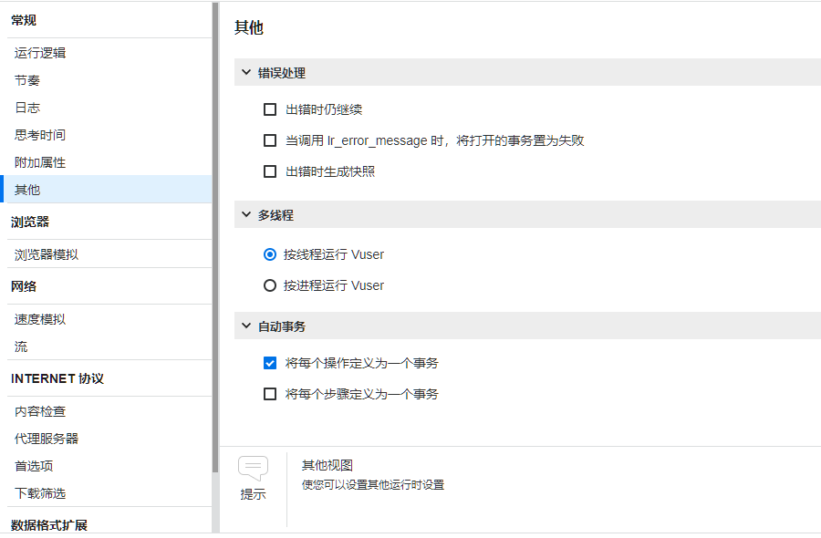
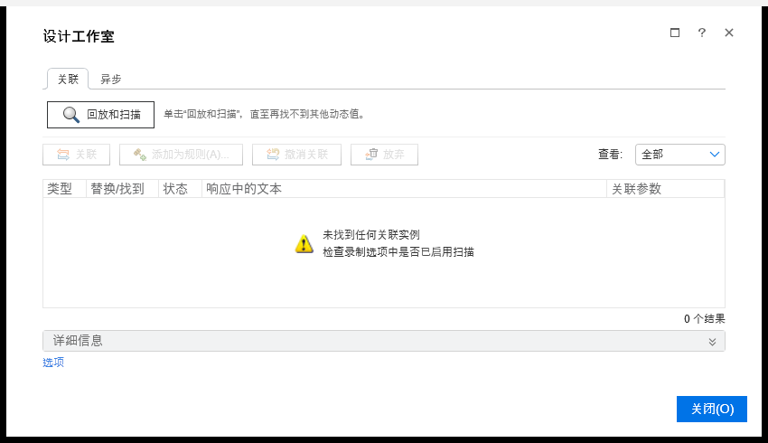
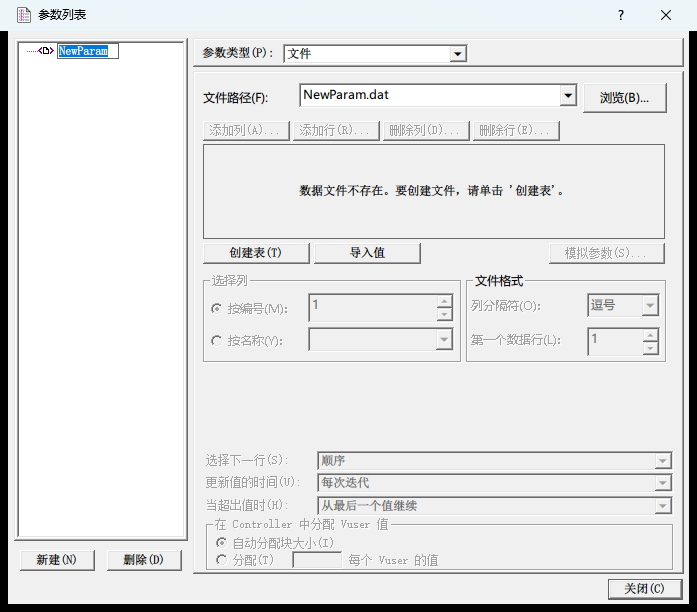
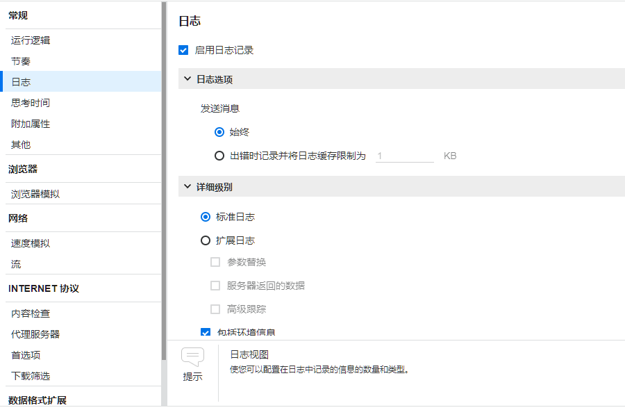
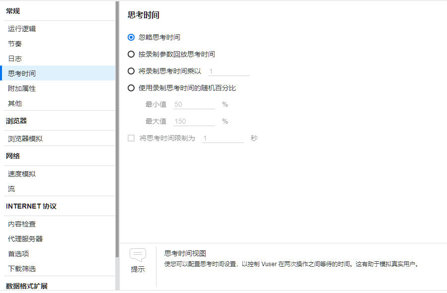

第 15 章 VuGen 脚本增强¶
本章目标
- 说清楚录制出来的脚本为什么不能直接拿去压测；
- 会用事务给业务操作计时，读得懂回放日志里的事务耗时和思考时间；
- 会用检查点检查业务结果，知道检查失败时事务和日志是什么样子；
- 会找出脚本里的动态值，用按 JSON 取值和按左右边界取值两种办法做关联；
- 会用参数列表做参数化，分得清几种取值方式在 VuGen 和 Controller 里的区别；
- 会设置思考时间和节奏，知道集合点在哪里起作用；
- 能处理脚本里的中文：源文件、地址、请求体、数据文件；
- 会用日志、断点和命令行回放排查脚本问题；
- 整理出一个能直接拿去压测的脚本 shop_order。
第 14 章录出了第一个脚本 shop_first，回放全部通过，可它的 token、订单号、账号都是录制时写死的，支付成没成功也没人检查。本章从头整理出一个专门压接口的脚本 shop_order：只留登录、搜索、下单、支付四个接口，每个都有事务和检查点，token 和订单号从响应里取，每个虚拟用户用自己的账号。后面几章在 Controller 里压的就是它。
成品脚本在参考代码的 lr/shop_order/ 目录（文件清单见 15.10 节）。动手前照旧把练习网站跑起来（第 2 章 2.1 节）。本章的日志都是实际回放得到的，只摘了和讲解有关的行，行尾的 [MsgId: ……] 编号省掉了，日志里的弯引号换成了直引号，地址里的端口统一写成 8000；你回放时的耗时、token、订单号和这里不一样是正常的。
15.1 录制的脚本为什么不能直接压测¶
15.1.1 三个问题¶
第 14 章最后列了 shop_first 留下的问题，归结起来是三个：
| 问题 | 第 14 章看到的现象 | 本章的办法 |
|---|---|---|
| 没有业务检查 | 回放全部通过，支付那一步服务器回的却是业务码 3003（订单状态不允许这个操作），HTTP 状态码是 200，新下的订单一直待支付 | 检查点（15.3 节） |
| token 和订单号写死 | 练习网站一重启，回放就在 me 那一步报 401；支付付的总是录制时那张旧订单 | 关联（15.4 节） |
| 所有虚拟用户用同一个账号 | 登录的请求体里写死了 alice、alice123 | 参数化（15.5 节） |
前两个问题第 14 章都亲眼看到了。第三个问题在单个用户回放时看不出来，压测时才会暴露。几十个虚拟用户挤在一个账号上，测出来的数字会严重失真：
- 很多真实系统不允许同一个账号在多处登录，新的登录会让旧 token 失效。练习网站用
SHOP_SINGLE_SESSION=1启动时就是这样（第 2 章 2.5 节），大家共用一个账号，就会互相让对方的 token 失效，报一片 401； - 练习网站对同一个账号的支付是排队处理的，代码里的注释写着「正常情况下同一用户的支付排队处理」。所有人都用 alice，支付全排在一条队上，测出来的是这一个账号的排队时间；
- 数据全堆在一个账号上：余额很快被扣光（每个账号初始只有 100000 元，第 2 章 2.1 节），订单越积越多，和真实的使用情况相差很远。
15.1.2 只留四个接口¶
压测脚本留哪些请求，取决于这次压测要回答什么问题。本章要看的是下单链路上几个核心接口最多能承受多大的压力，对应第 13 章 13.4 节那张目标表里的搜索、下单、支付，再加上它们前面必须有的登录。所以 shop_order 只留这四个接口，第 14 章录到的其他请求都不要：
| 录制里的请求 | 为什么不留 | 什么时候该留 |
|---|---|---|
| 打开首页、商品页、订单页（127.0.0.1:8000、products.html、orders.html）和它们带的 css、js | 静态文件的压力和接口不是一回事。生产环境里它们一般由 CDN（把静态文件分发到各地、就近返回的服务）或 Web 服务器直接返回，浏览器还会缓存。混在一起，接口的数字会被冲淡 | 要测「打开一个页面要多久」时。另写一个脚本，保留网页步骤，Mode=HTML 会像浏览器一样下载页面引用的资源（第 14 章） |
| me、me_2、me_3（页面右上角的余额），products（登录后的商品列表），products_3（下单后刷新商品列表），orders_2、orders_3（订单列表） | 页面顺带调用的接口，不在这次要看的四个里面 | 做混合场景、按真实的流量比例压测时，可以各自写成事务加进来 |
| 谷歌的后台请求（如果录进来了） | 和被测系统无关，压测时会去访问别人的服务器 | 任何时候都不留 |
目标表里还有一行商品详情。第 14 章录的流程没有打开过商品详情，这里先不加，留作练习（15.12 节练习 1）。
另外，shop_order 是新建的脚本，不在 shop_first 上改。第 14 章说过，重新生成脚本会覆盖手工修改；shop_first 留着它的录制数据，以后要看快照、要重新生成都还能用。
15.1.3 新建 shop_order¶
- 照第 14 章新建脚本的步骤：文件 → 新建脚本和解决方案，选单协议里的 Web - HTTP/HTML，「脚本名」填
shop_order，「位置」还是工程目录下的 lr 文件夹，点「创建」； - shop_first 的代码在
lr\shop_first\Action.c里，在资源管理器里右键它 → 打开方式 → 记事本，开在旁边对照着复制。在解决方案资源管理器里双击 shop_order 的 vuser_init，把 shop_first 里 login 那一步复制过来； - 双击 Action，把 shop_first 里搜索「键盘」的那一步（products_2）复制过来，步骤名改成 search；
- 照下面的样子删掉不用的参数，把地址开头的
http://127.0.0.1:8000换成{base}，在 vuser_init 最前面加一句 lr_save_string。
改完的 vuser_init.c：
vuser_init()
{
// 被测系统的地址：换环境只改这一行
lr_save_string("http://127.0.0.1:8000", "base");
web_custom_request("login",
"URL={base}/api/login",
"Method=POST",
"EncType=application/json",
"Body={\"username\":\"alice\",\"password\":\"alice123\"}",
LAST);
return 0;
}
Action.c：
Action()
{
web_url("search",
"URL={base}/api/products?keyword=%E9%94%AE%E7%9B%98&page=1&size=10",
LAST);
return 0;
}
几处改动的原因：
- 登录放进 vuser_init。 vuser_init 只执行一次，Action 按迭代次数反复执行（第 14 章）。每个虚拟用户登录一次，然后反复搜索、下单、支付，每次迭代就是一次购物。要是登录本身也是压测目标，就另写一个脚本，把登录放进 Action 里反复执行。
- 删掉了 Resource、RecContentType、Referer、Snapshot、Mode 这几个参数。 它们是录制时记下的信息：Snapshot 指向录制快照，新脚本里没有这些快照；Referer 是浏览器当时所在的页面，练习网站的接口不看它；另外几个不写就按默认方式处理。删掉以后回放照样通过（下一节）。被测系统要检查 Referer 的话（有的系统拿它防跨站请求），就把它留着。
- 地址开头换成
{base}。 lr_save_string 把字符串http://127.0.0.1:8000存进名叫 base 的参数，脚本里写{base}的地方，回放时会换成它的值。换测试环境只改这一行，不用一个个去改地址。参数在 15.4、15.5 节细讲。 - 步骤名改成 search。 步骤名只在日志和报告里用来称呼这一步，起个看得懂的名字。
下单和支付要用到 token 和订单号，等 15.4 节做完关联再加。
15.1.4 第一次回放¶
按 F5 回放（节选）：
正在开始操作 vuser_init。
vuser_init.c(6): web_custom_request("login") 已启动
vuser_init.c(6): web_custom_request("login") 已成功，142 个正文字节，126 个标头字节
正在结束操作 vuser_init。
正在运行 Vuser...
正在开始迭代 1。
警告 -27077: "每次迭代模拟一个新用户"运行时设置为"开"时，"vuser_init" 部分将包含 Web 函数。这可能会产生具有多次迭代的不可预测结果
每个服务器的最大并发连接数: 6
正在开始操作 Action。
Action.c(3): web_url("search") 已启动
Action.c(3): web_url("search") 已成功，144 个正文字节，126 个标头字节
正在结束操作 Action。
正在结束迭代 1。
登录和搜索都成功了。日志里有两处要说明。
第一处：每个返回 JSON 的步骤都会多一行「未对 Content-Type"application/json"执行 HTML 解析……」（上面省掉了），意思是返回的不是网页，VuGen 不去里面找 css、js 这类资源。这是正常的提示，不用管。
第二处：第 1 次迭代开始时有一条警告 -27077。它说的是运行时设置里的「每次迭代模拟一个新用户」开着，而 vuser_init 里有 web 函数。这个设置开着时，每次迭代开始前都会把虚拟用户的浏览器状态重置一遍，像换了一个新用户来访问。官方错误码手册的解释是：开着它时，vuser_init 应该是空的；关掉它时，Action 才能依赖 vuser_init 里做好的准备（比如登录），否则从第 2 次迭代起，脚本可能因为状态被重置而失败。shop_order 是「登录一次、反复购物」的设计，属于后一种，所以把它关掉：
- 回放 → 运行时设置（快捷键 F4），左边选 浏览器 → 浏览器模拟；
- 在右边找到「每次迭代模拟一个新用户」（Simulate a new user on each iteration），去掉勾；
- 文件 → 保存脚本，再回放一次。
这次第 1 次迭代开始时没有那条警告了：
正在运行 Vuser...
正在开始迭代 1。
正在开始操作 Action。
Action.c(3): web_url("search") 已启动
Action.c(3): web_url("search") 已成功，144 个正文字节，126 个标头字节
正在结束操作 Action。
正在结束迭代 1。
说明
提示：开着它也不一定出错。 实测开着这个设置迭代 3 次，web_add_auto_header 加上的 token 请求头（15.4.3 节加上以后）一直都在，练习网站只认这个请求头，所以照样能通过。换成靠 cookie 保持登录的系统，第 2 次迭代起就可能变成没登录。反过来，要模拟「每次迭代都是一个新来的访客」，就开着它，并把登录、退出都放进 Action。
15.2 事务¶
15.2.1 给登录和搜索加上事务¶
第 13 章 13.2.2 节说过，事务是一次完整的业务操作，LoadRunner 统计的响应时间就是事务的耗时（第 13 章 13.2.3 节）。脚本里用一对函数把要计时的步骤圈起来：
| 函数 | 作用 |
|---|---|
lr_start_transaction("事务名") |
事务开始，开始计时 |
lr_end_transaction("事务名", 状态) |
事务结束，记下耗时和结果。名字要和开始时的一样 |
可以直接在代码里写，也可以用菜单插入：光标放在要开始的地方，设计 → 在脚本中插入 → 开始事务（Design → Insert in Script → Start Transaction，快捷键 Ctrl+T），结束用同一个菜单里的「结束事务」（Ctrl+Shift+T）；先选中几步再用「事务环绕」（Ctrl+Shift+I），开头和结尾一次插好。录制时也可以直接点录制工具栏上的「插入开始事务」「插入结束事务」（第 14 章）。
vuser_init.c：
vuser_init()
{
// 被测系统的地址：换环境只改这一行
lr_save_string("http://127.0.0.1:8000", "base");
lr_start_transaction("01_login");
web_custom_request("login",
"URL={base}/api/login",
"Method=POST",
"EncType=application/json",
"Body={\"username\":\"alice\",\"password\":\"alice123\"}",
LAST);
lr_end_transaction("01_login", LR_AUTO);
return 0;
}
Action.c：
Action()
{
lr_start_transaction("02_search");
web_url("search",
"URL={base}/api/products?keyword=%E9%94%AE%E7%9B%98&page=1&size=10",
LAST);
lr_end_transaction("02_search", LR_AUTO);
lr_think_time(1);
return 0;
}
搜索后面加了一句 lr_think_time(1)，表示真实用户看搜索结果要停 1 秒，也就是思考时间（第 13 章 13.2.1 节，15.6 节细讲）。注意它写在 lr_end_transaction 后面，原因见 15.2.4 节。
15.2.2 事务的状态¶
lr_end_transaction 的第二个参数是事务的状态：
| 写法 | 意思 | 什么时候用 |
|---|---|---|
LR_AUTO |
由 LoadRunner 判断：事务里没出错就是 Pass，出了错就是 Fail | 大多数事务，配合检查点（15.3 节）用 |
LR_PASS |
记为成功 | 脚本自己判断过结果、确认成功时 |
LR_FAIL |
记为失败 | 脚本自己判断出业务失败时，比如支付返回的业务码不是 0（15.4.4 节） |
另外还有一个 LR_STOP，表示事务中止，很少用到。LR_FAIL 一般放在 if 里，脚本自己判断出失败时用。后面支付那一步就是这么写的：业务码不是 0 时记 LR_FAIL，否则仍交给 LR_AUTO，让 LoadRunner 照常判断。
15.2.3 事务怎么命名¶
VuGen 自带的提示文字里写着事务名的要求：不能重名，最多 256 个字符，只能包含可打印的字符，另外有几个特殊字符不能用。本教程统一用「两位序号 + 下划线 + 英文」：01_login、02_search、03_order、04_pay。
- 序号让事务按名字排列时和业务流程的顺序一致，在 Controller、Analysis 的事务列表里一眼就能看出先后；
- 用英文，是因为中文事务名在 Controller、Analysis 里显示有没有问题，本教程没有验证过，英文最稳妥；
- 名字要说清楚是什么业务，别用 t1、test 这种，过一个月自己都看不懂。
事务还可以嵌套，比如再用一个大事务把下单和支付一起包住。嵌套时先结束里面的、再结束外面的，而且里外两个事务都要在同一个操作里开始和结束。
15.2.4 在日志里看事务¶
回放，每个事务开始、结束各有一行日志（节选）：
vuser_init.c(6): 通知: 事务 "01_login" 已启动。
……
vuser_init.c(15): 通知: 事务 "01_login" 以 "Pass" 状态结束 (持续时间: 0.0716)。
……
Action.c(3): 通知: 事务 "02_search" 已启动。
……
Action.c(9): 通知: 事务 "02_search" 以 "Pass" 状态结束 (持续时间: 0.0535)。
结束那一行写着状态（Pass）和持续时间（单位是秒）。登录 0.07 秒、搜索 0.05 秒，单个用户访问本机的网站，这个速度是正常的。
搜索后面的 lr_think_time(1) 在日志里看不到，因为 VuGen 回放默认忽略思考时间（第 14 章提过 default.cfg 里的 NOTHINK）。想看思考时间的效果，就按 F4 打开运行时设置，左边选 常规 → 思考时间，选「按录制参数回放思考时间」（15.6 节细讲），再回放：
Action.c(3): 通知: 事务 "02_search" 已启动。
Action.c(9): 通知: 事务 "02_search" 以 "Pass" 状态结束 (持续时间: 0.0541)。
Action.c(11): lr_think_time: 1.00 秒。
思考时间在事务结束以后才执行，没有算进事务。做个对比，把 lr_think_time(1) 临时挪到 lr_end_transaction 前面：
Action()
{
lr_start_transaction("02_search");
web_url("search",
"URL={base}/api/products?keyword=%E9%94%AE%E7%9B%98&page=1&size=10",
LAST);
lr_think_time(1);
lr_end_transaction("02_search", LR_AUTO);
return 0;
}
Action.c(3): 通知: 事务 "02_search" 已启动。
Action.c(9): lr_think_time: 1.00 秒。
Action.c(11): 通知: 事务 "02_search" 以 "Pass" 状态结束 (持续时间: 1.0659 思考时间: 1.0020)。
持续时间变成了 1.07 秒，后面还多了「思考时间: 1.0020」：思考时间被算进了事务，搜索接口明明只用了几十毫秒。为了让事务时间只反映系统处理请求的时间，lr_think_time 一律写在两个事务之间。看完把它挪回原处，思考时间也改回「忽略思考时间」。
15.2.5 自动事务¶
运行时设置 → 常规 → 其他（Miscellaneous）里有一组「自动事务」，15.3 节还要用到这一页的「错误处理」：

| 选项 | 默认 | 作用 |
|---|---|---|
| 将每个操作定义为一个事务 | 勾着 | vuser_init、Action、vuser_end 各算一个事务，事务名是操作名后面加 _Transaction |
| 将每个步骤定义为一个事务 | 不勾 | 每个 web_url、web_custom_request 这样的步骤各算一个事务 |
第一项生成的事务，实测在命令行回放（15.9.5 节）的日志里看不到；到了 Controller 的结果里，会看到 vuser_init_Transaction、Action_Transaction、vuser_end_Transaction 这三个事务。第二项建议保持不勾：勾上以后每个步骤都变成一个事务，真正关心的 01_login 这几个反而不好找。要统计哪段操作的耗时，就像上面这样手写事务。
15.3 检查点¶
15.3.1 web_reg_find 要写在请求前面¶
第 13 章 13.2.4 节说过，错误率要把业务失败也算进去。检查点就是检查响应的内容对不对，最常用的是 web_reg_find：在响应里找一段文字，找不到就算这一步失败。
web_reg_find 是一个注册函数（名字里的 reg 是 register 的缩写），它本身不发请求，只是先登记一件事：等下一个发请求的步骤收到响应，就在响应里找这段文字。所以它必须写在要检查的请求前面。
练习网站的接口都返回 {"code": 0, "msg": "ok", "data": {...}} 这样的结构，code 是 0 表示成功（第 2 章 2.6 节）。实际返回的内容里冒号后面没有空格，第 14 章扩展日志里的 {"code":3003,...} 就是这样，所以检查成功就找 "code":0 这几个字符，要和响应逐字一致。vuser_init.c 和 Action.c 改成这样：
vuser_init()
{
// 被测系统的地址：换环境只改这一行
lr_save_string("http://127.0.0.1:8000", "base");
lr_start_transaction("01_login");
// 检查点和关联都是注册函数，要写在请求前面
web_reg_find("Text=\"code\":0", LAST);
web_custom_request("login",
"URL={base}/api/login",
"Method=POST",
"EncType=application/json",
"Body={\"username\":\"alice\",\"password\":\"alice123\"}",
LAST);
lr_end_transaction("01_login", LR_AUTO);
return 0;
}
Action()
{
lr_start_transaction("02_search");
web_reg_find("Text=\"code\":0", LAST);
web_url("search",
"URL={base}/api/products?keyword=%E9%94%AE%E7%9B%98&page=1&size=10",
LAST);
lr_end_transaction("02_search", LR_AUTO);
lr_think_time(1);
return 0;
}
C 语言的字符串里，双引号要写成 \"，所以 "Text=\"code\":0" 找的就是 "code":0。回放（节选）：
vuser_init.c(6): 通知: 事务 "01_login" 已启动。
vuser_init.c(9): web_reg_find 已启动
vuser_init.c(9): 注册 web_reg_find 成功
vuser_init.c(11): web_custom_request("login") 已启动
vuser_init.c(11): 注册的 web_reg_find 对于"Text="code":0"成功(计数=1)
vuser_init.c(11): web_custom_request("login") 已成功，142 个正文字节，126 个标头字节
vuser_init.c(18): 通知: 事务 "01_login" 以 "Pass" 状态结束 (持续时间: 0.0394 浪费时间: 0.0000)。
……
Action.c(3): 通知: 事务 "02_search" 已启动。
Action.c(5): web_reg_find 已启动
Action.c(5): 注册 web_reg_find 成功
Action.c(7): web_url("search") 已启动
Action.c(7): 注册的 web_reg_find 对于"Text="code":0"成功(计数=1)
Action.c(7): web_url("search") 已成功，144 个正文字节，126 个标头字节
Action.c(11): 通知: 事务 "02_search" 以 "Pass" 状态结束 (持续时间: 0.0532 浪费时间: 0.0000)。
注册那一行（vuser_init.c 第 9 行）先打印「注册 web_reg_find 成功」，等第 11 行的请求发完，才打印检查结果「成功(计数=1)」，表示找到了 1 处。
从这一版开始，事务结束那一行多了「浪费时间」。官方帮助的解释是：这是 LoadRunner 为了统计和分析做额外工作（比如记录事务数据）花的时间，真实用户不会花这些时间；Controller 和 Analysis 的图里，事务时间都是扣掉它以后的数。这里都不到 1 毫秒，可以不管。
web_reg_find 常用的几个写法：
| 写法 | 意思 |
|---|---|
"Text=要找的文字" |
在响应里找这段文字 |
"Fail=NotFound" |
找不到就算失败。这是默认值，不写就是它 |
"Fail=Found" |
反过来，找到了算失败，用来找「系统繁忙」这类不该出现的文字 |
"SaveCount=参数名" |
把找到的次数存进参数。注意它的副作用，见 15.3.3 节 |
"Search=Body" |
在哪里找：Body 是响应体（默认），Headers 是响应头，ALL 是全部 |
录制时也可以点录制工具栏上的「插入文本检查」（第 14 章），当场加一个文本检查。本章的脚本是手写的，直接写 web_reg_find。
15.3.2 检查失败时¶
把 vuser_init 里的密码临时改成 wrong，登录接口会返回 {"code":1001,"msg":"用户名或密码错误","data":null}，HTTP 状态码仍是 200。回放：
vuser_init.c(6): 通知: 事务 "01_login" 已启动。
vuser_init.c(9): web_reg_find 已启动
vuser_init.c(9): 注册 web_reg_find 成功
vuser_init.c(11): web_custom_request("login") 已启动
vuser_init.c(11): 错误 -26366: 找不到 web_reg_find 的"Text="code":0"
vuser_init.c(11): web_custom_request("login") 最高严重级别为"ERROR"，58 个正文字节，125 个标头字节
vuser_init.c(11): 通知: 事务 "01_login" 以 "Fail" 状态结束 (持续时间: 0.0738 浪费时间: 0.0000)。
vuser_init.c(11): 通知: 事务 "01_login" 具有 1 条错误消息。
vuser_init.c(11): 通知: 与事务 "01_login" 关联的 1st 错误消息为"错误 -26366: 找不到 web_reg_find 的"Text="code":0""
从操作调用了中止。
依次看：-26366 说的是没找到 "code":0；登录这一步因此失败（最高严重级别为 ERROR）；01_login 事务以 Fail 结束，后面附上了导致失败的那条错误。最后一行「从操作调用了中止」：vuser_init 出错时，整个虚拟用户直接停止，Action 和 vuser_end 都不执行。登录都没成功，后面的事也没法做，这样处理是合理的。
注意事务结束那一行的行号是 11，也就是出错的那一步，不是 lr_end_transaction 所在的第 18 行。脚本没有执行到 lr_end_transaction，是 LoadRunner 在出错时替你把还开着的事务结束了，记成失败。
Action 里的步骤出错，结果不一样。把密码改回来，再把 Action 里的检查点临时改成 web_reg_find("Text=\"total\":0", LAST);（键盘明明搜到 1 个，所以一定找不到），迭代数设成 2（运行时设置 → 常规 → 运行逻辑 → 迭代数），回放（节选）：
正在开始迭代 1。
Action.c(3): 通知: 事务 "02_search" 已启动。
Action.c(7): web_url("search") 已启动
Action.c(7): 错误 -26366: 找不到 web_reg_find 的"Text="total":0"
Action.c(7): web_url("search") 最高严重级别为"ERROR"，144 个正文字节，126 个标头字节
Action.c(7): 通知: 事务 "02_search" 以 "Fail" 状态结束 (持续时间: 0.0415 浪费时间: 0.0000)。
……
正在结束迭代 1。
正在开始迭代 2。
Action.c(3): 通知: 事务 "02_search" 已启动。
Action.c(7): web_url("search") 已启动
Action.c(7): 错误 -26366: 找不到 web_reg_find 的"Text="total":0"
Action.c(7): web_url("search") 最高严重级别为"ERROR"，144 个正文字节，126 个标头字节
Action.c(7): 通知: 事务 "02_search" 以 "Fail" 状态结束 (持续时间: 0.0505 浪费时间: 0.0000)。
……
正在结束迭代 2。
Action 里出错时，这次迭代剩下的部分不再执行，下一次迭代照常开始。压测时一个请求失败，这个虚拟用户就放弃这次购物、从下一次迭代重新来，事务记一次失败。
运行时设置 → 常规 → 其他 → 错误处理 里的「出错时仍继续」（Continue on error）默认不勾。勾上它，迭代数改回 1，为了看清后面的步骤有没有执行，思考时间也改成「按录制参数回放思考时间」，再回放（节选）：
Action.c(7): 发生错误后继续 -26366: 找不到 web_reg_find 的"Text="total":0"
Action.c(7): web_url("search") 最高严重级别为"continue on error"，144 个正文字节，126 个标头字节
Action.c(7): 在 Vuser 脚本出现错误之后仍在继续。
Action.c(11): 通知: 事务 "02_search" 以 "Fail" 状态结束 (持续时间: 0.0379 浪费时间: 0.0000)。
……
Action.c(13): lr_think_time: 1.00 秒。
这次执行到了 lr_end_transaction（第 11 行），LR_AUTO 发现事务里出过错，照样记成 Fail，后面的思考时间也执行了。这个选项会让出错后的步骤带着错误的数据接着跑，日志也更乱，一般不勾。看完把检查点、思考时间和这个选项都改回去。
15.3.3 两个容易写错的地方¶
写在请求后面。 把 web_reg_find 挪到 login 那一步后面：
lr_start_transaction("01_login");
web_custom_request("login",
"URL={base}/api/login",
"Method=POST",
"EncType=application/json",
"Body={\"username\":\"alice\",\"password\":\"alice123\"}",
LAST);
web_reg_find("Text=\"code\":0", LAST);
lr_end_transaction("01_login", LR_AUTO);
vuser_init.c(6): 通知: 事务 "01_login" 已启动。
vuser_init.c(8): web_custom_request("login") 已启动
vuser_init.c(8): web_custom_request("login") 已成功，142 个正文字节，126 个标头字节
vuser_init.c(15): web_reg_find 已启动
vuser_init.c(15): 注册 web_reg_find 成功
vuser_init.c(17): 通知: 事务 "01_login" 以 "Pass" 状态结束 (持续时间: 0.0363)。
……
正在开始迭代 1。
错误 -27259: 检测到挂起的 web_reg_save_param/web_create_html_param/web_create_html_param_ex/web_reg_find 请求并在 vuser_init 部分的结尾进行重置
正在结束 Vuser...
正在开始操作 vuser_end。
正在结束操作 vuser_end。
Vuser 已终止。
登录这一步根本没检查，01_login 记成了 Pass。vuser_init 结束时还剩一个没用上的注册，第 1 次迭代一开始就报 -27259（检测到挂起的……web_reg_find 请求），Action 一步都没执行。写在 Action 中间的话后果更隐蔽：它会去检查下一个请求的响应，检查的对象就错了。看完把 web_reg_find 挪回请求前面。
只写了 SaveCount。 把密码再改成 wrong，检查点加上 SaveCount，再把次数打印出来：
// 检查点和关联都是注册函数，要写在请求前面
web_reg_find("Text=\"code\":0", "SaveCount=login_ok", LAST);
web_custom_request("login",
"URL={base}/api/login",
"Method=POST",
"EncType=application/json",
"Body={\"username\":\"alice\",\"password\":\"wrong\"}",
LAST);
lr_output_message("\"code\":0 出现了 %s 次", lr_eval_string("{login_ok}"));
lr_end_transaction("01_login", LR_AUTO);
vuser_init.c(11): web_custom_request("login") 已启动
vuser_init.c(11): 注册的 web_reg_find 对于"Text="code":0"成功
vuser_init.c(11): web_custom_request("login") 已成功，58 个正文字节，125 个标头字节
vuser_init.c(18): "code":0 出现了 0 次
vuser_init.c(20): 通知: 事务 "01_login" 以 "Pass" 状态结束 (持续时间: 0.0504 浪费时间: 0.0000)。
找到 0 次，检查点却显示成功，事务也是 Pass。官方函数参考写得很清楚：用了 SaveCount、又没写 Fail 时，不管找没找到，检查都不会失败，要自己判断次数。想既记次数、又在找不到时失败，就同时写上 "Fail=NotFound"。
15.3.4 检查业务码的两种写法¶
第一种：web_reg_find 找 "code":0，就是上面的写法。简单，找不到自动算失败，适合「成功就继续、失败就放弃」的步骤。
"Fail=Found" 可以反过来找错误码，比如密码错误时找 "code":1001：
web_reg_find("Text=\"code\":1001", "Fail=Found", LAST);
vuser_init.c(11): 错误 -26368: 找到了 web_reg_find 的"Text="code":1001"(count=1)
vuser_init.c(11): 通知: 事务 "01_login" 以 "Fail" 状态结束 (持续时间: 0.0562 浪费时间: 0.0001)。
它只能挡住你事先想到的那几个错误码，日常还是检查成功码更稳妥。
第二种：取出业务码再判断。 用 web_reg_save_param_json（15.4 节细讲）把响应里的 code 存进参数，再用 if 判断：
lr_start_transaction("01_login");
// 检查点和关联都是注册函数，要写在请求前面
web_reg_save_param_json("ParamName=loginCode",
"QueryString=$.code",
SEARCH_FILTERS,
"Scope=Body",
LAST);
web_custom_request("login",
"URL={base}/api/login",
"Method=POST",
"EncType=application/json",
"Body={\"username\":\"alice\",\"password\":\"wrong\"}",
LAST);
if (strcmp(lr_eval_string("{loginCode}"), "0") != 0) {
lr_error_message("登录失败，业务码 %s", lr_eval_string("{loginCode}"));
}
lr_end_transaction("01_login", LR_AUTO);
lr_eval_string 取出参数的值（一个字符串），strcmp 比较两个字符串，相等时返回 0，所以 strcmp(...) != 0 就是「业务码不是 0」。这种写法能把真实的业务码写进日志，还能根据不同的码做不同的处理，代价是代码多几行。shop_order 的支付那一步用的就是它。
15.3.5 lr_error_message 和「将打开的事务置为失败」¶
上面这段代码在业务码不对时调了 lr_error_message，它往日志里写一条错误。密码还是 wrong，回放：
vuser_init.c(23): 错误: 登录失败，业务码 1001
vuser_init.c(26): 通知: 事务 "01_login" 以 "Pass" 状态结束 (持续时间: 0.0343 浪费时间: 0.0003)。
错误打印出来了，01_login 事务却是 Pass：lr_error_message 默认只写日志，不影响事务的状态。
运行时设置 → 常规 → 其他（15.2.5 节的截图）里有一项「当调用 lr_error_message 时，将打开的事务置为失败」（Fail open transactions on lr_error_message），默认不勾。勾上它，脚本不改，再回放：
vuser_init.c(23): 错误: 登录失败，业务码 1001
vuser_init.c(26): 通知: 事务 "01_login" 以 "Fail" 状态结束 (持续时间: 0.0672 浪费时间: 0.0003)。
vuser_init.c(26): 通知: 事务 "01_login" 具有 1 条错误消息。
vuser_init.c(26): 通知: 与事务 "01_login" 关联的 1st 错误消息为"错误 0: 登录失败，业务码 1001"
这次 01_login 记成了 Fail。
这个开关保存在运行时设置里，和代码是分开的：光看代码看不出事务会不会失败，运行时设置一改，结果也跟着变。所以本教程的写法是在代码里明确写 LR_FAIL：发现业务失败时，先用 lr_error_message 写清楚原因，再 lr_end_transaction(..., LR_FAIL)，不依赖这个开关。看完把开关和密码都改回去。
15.4 关联¶
15.4.1 什么是关联¶
token 是登录时服务器随机生成的，订单号是下单时服务器分配的，每次都不一样，这样的值叫动态值。录制时它们被原样记进了脚本，回放时服务器早就不认了，这就是 15.1 节第二个问题的根源。
关联（correlation）就是在回放时把动态值从响应里取出来，存进参数，再用到后面的请求里。第 4 章 4.7 节串接口时已经做过同样的事：创建订单拿到订单号，再拿它去支付，只是当时用的是 Python。
15.4.2 找出脚本里的动态值¶
动手关联之前，先要知道哪些值是动态的。有三个办法。
对比两次录制。 同一个流程录两遍，把两个 Action.c 放在一起看，不一样的地方多半就是动态值。实测用第 14 章的代理方式和导入 HAR 各录了一次，token 是这样的：
// 用代理方式录的
web_add_auto_header("token",
"40da726cb4e930b1ceaaf4066142236f");
// 导入 HAR 生成的
web_add_auto_header("token",
"928fbf03673960daa2c0cb7333681e50");
两次的支付地址却都是 /api/orders/SO20261023000001/pay：两次录制都是在练习网站刚启动后、同一天录的，订单的流水号都从 1 开始。只靠对比会漏掉它，还要结合业务想一想：每次下单都会生成新订单，订单号不可能固定。
看录制快照。 第 14 章介绍过快照窗格（查看 → 快照），也可以直接看脚本目录下的 data 文件夹：步骤里的 "Snapshot=t6.inf" 指向 data 文件夹里的 t6.inf，里面记着这一步的地址和响应文件名（FileName1=t6.json）。代理方式录的脚本里，login 那一步的 t6.json 是这样的：
{"code":0,"msg":"ok","data":{"token":"40da726cb4e930b1ceaaf4066142236f","refreshToken":"852a4f23c52b92eb79a233ab14700458","username":"alice"}}
token 就在登录接口的返回里，data 下面的 token。这就知道该从哪个响应、哪个位置取它了。导入 HAR 生成的脚本里，login 的快照实测是空的（HAR 文件里没记下这个响应的内容），这时用第三个办法。
看回放日志。 打开扩展日志的「服务器返回的数据」（第 14 章用过），回放第 14 章的脚本，login 那一步的日志是这样的：
Action.c(16): web_custom_request("login") 已启动
Action.c(16): "http://127.0.0.1:8000/api/login" 的 t=716ms: 142 个字节响应正文 (RelFrameId=1, Internal ID=5)
Action.c(16): {"code":0,"msg":"ok","data":{"token":"3fb1bb7d6b8c71c1d77c1230fc9a8fd0","refreshToken":"82
Action.c(16): 41b0db1df63cc55ec80f90a36d5343","username":"alice"}}
Action.c(16): web_custom_request("login") 已成功，142 个正文字节，126 个标头字节
服务器这次发的 token 是 3fb1bb7d……，而脚本里 web_add_auto_header 写的还是录制时的那一个，对不上的就是动态值。第 14 章顺着支付的响应看到了业务码 3003，也是同样的思路：响应和预期对不上，就去找脚本里写死的值。
15.4.3 用 web_reg_save_param_json 取 token¶
练习网站的接口都返回 JSON，从 JSON 里取值用 web_reg_save_param_json。它和 web_reg_find 一样是注册函数，写在请求前面：
web_reg_save_param_json("ParamName=token",
"QueryString=$.data.token",
SEARCH_FILTERS,
"Scope=Body",
LAST);
| 写法 | 意思 |
|---|---|
"ParamName=token" |
取到的值存进名叫 token 的参数，后面用 {token} 引用 |
"QueryString=$.data.token" |
用 JSONPath（在 JSON 里定位一个值的写法）指定取哪个值：$ 是整个响应，$.data.token 是 data 下面的 token。列表用下标，$.data.items[0].id 是 items 第一个元素的 id，下标从 0 开始 |
SEARCH_FILTERS |
一个分隔标记，后面写在哪里找 |
"Scope=Body" |
只在响应体里找 |
LAST |
参数到此结束 |
要取的值找不到时，这一步报错 -35060（找不到所指定查询的匹配项），和检查点失败一样会让事务失败，所以它本身也起到了检查的作用。
取到 token 以后，用第 14 章见过的 web_add_auto_header 让之后的每个请求都带上它。完整的 vuser_init.c：
vuser_init()
{
// 被测系统的地址：换环境只改这一行
lr_save_string("http://127.0.0.1:8000", "base");
lr_start_transaction("01_login");
// 检查点和关联都是注册函数，要写在请求前面
web_reg_find("Text=\"code\":0", LAST);
web_reg_save_param_json("ParamName=token",
"QueryString=$.data.token",
SEARCH_FILTERS,
"Scope=Body",
LAST);
web_custom_request("login",
"URL={base}/api/login",
"Method=POST",
"EncType=application/json",
"Body={\"username\":\"alice\",\"password\":\"alice123\"}",
LAST);
lr_end_transaction("01_login", LR_AUTO);
// 之后的每个请求都带上登录拿到的 token
web_add_auto_header("token", "{token}");
return 0;
}
和录制的脚本相比，web_add_auto_header("token", ...) 的第二个参数从写死的一串字符变成了 {token}，关联就完成了。
15.4.4 加上下单和支付¶
Action 里用同样的办法：从搜索结果取商品编号 pid，从下单的响应取订单号 orderNo，从支付的响应取业务码 payCode。完整的 Action.c：
Action()
{
lr_start_transaction("02_search");
web_reg_find("Text=\"code\":0", LAST);
web_reg_save_param_json("ParamName=pid",
"QueryString=$.data.items[0].id",
SEARCH_FILTERS,
"Scope=Body",
LAST);
web_url("search",
"URL={base}/api/products?keyword=%E9%94%AE%E7%9B%98&page=1&size=10",
LAST);
lr_end_transaction("02_search", LR_AUTO);
lr_think_time(1);
lr_start_transaction("03_order");
web_reg_find("Text=\"code\":0", LAST);
web_reg_save_param_json("ParamName=orderNo",
"QueryString=$.data.orderNo",
SEARCH_FILTERS,
"Scope=Body",
LAST);
web_custom_request("order",
"URL={base}/api/orders",
"Method=POST",
"EncType=application/json",
"Body={\"items\":[{\"productId\":{pid},\"quantity\":1}]}",
LAST);
lr_end_transaction("03_order", LR_AUTO);
lr_think_time(1);
lr_start_transaction("04_pay");
web_reg_save_param_json("ParamName=payCode",
"QueryString=$.code",
SEARCH_FILTERS,
"Scope=Body",
LAST);
web_custom_request("pay",
"URL={base}/api/orders/{orderNo}/pay",
"Method=POST",
LAST);
// 支付失败时 HTTP 状态码仍是 200，要看业务码
if (strcmp(lr_eval_string("{payCode}"), "0") != 0) {
lr_error_message("支付失败：订单 %s，业务码 %s", lr_eval_string("{orderNo}"), lr_eval_string("{payCode}"));
lr_end_transaction("04_pay", LR_FAIL);
} else {
lr_end_transaction("04_pay", LR_AUTO);
}
lr_think_time(1);
return 0;
}
几个要点：
- 商品编号也做了关联。 练习网站里机械键盘的编号固定是 3，写死也能跑。之所以从搜索结果里取，是因为 15.8 节会把搜索词换成随机的，每次搜到的商品不一样，下单的商品编号必须跟着变；
- 请求体里引用参数。
"Body={\"items\":[{\"productId\":{pid},\"quantity\":1}]}"里，JSON 自己的大括号原样发出去，只有{pid}会被换成参数的值，因为只有 pid 是参数名； - 支付用第二种检查写法。 搜索、下单用 web_reg_find 检查
"code":0；支付取出业务码自己判断，失败时用 lr_error_message 写明订单号和业务码，再用 LR_FAIL 结束事务（15.3.5 节）； - 思考时间都在事务之间。 每个事务后面停 1 秒：看搜索结果、确认订单、看支付结果。
打开扩展日志的「参数替换」（运行时设置 → 常规 → 日志，详细级别选「扩展日志」，勾上「参数替换」，15.5.6 节有截图），回放，能看到每个参数什么时候存进去、又在哪里用掉（节选）：
vuser_init.c(4): 通知: 正在保存参数"base = http://127.0.0.1:8000"。
vuser_init.c(16): 通知: 参数替换:参数"base"="http://127.0.0.1:8000"
vuser_init.c(16): 警告: 带有参数分隔符的字符串""username":"alice","password":"alice123""不是参数。
vuser_init.c(16): 通知: 正在保存参数"token = 48fc919cf0745785e54e4e050e6604e1"。
vuser_init.c(23): 通知: 事务 "01_login" 以 "Pass" 状态结束 (持续时间: 0.0557 浪费时间: 0.0006)。
vuser_init.c(26): 通知: 参数替换:参数"token"="48fc919cf0745785e54e4e050e6604e1"
……
Action.c(12): 通知: 正在保存参数"pid = 3"。
Action.c(16): 通知: 事务 "02_search" 以 "Pass" 状态结束 (持续时间: 0.0363 浪费时间: 0.0003)。
Action.c(29): 通知: 参数替换:参数"pid"="3"
Action.c(29): 通知: 正在保存参数"orderNo = SO20261024000008"。
Action.c(36): 通知: 事务 "03_order" 以 "Pass" 状态结束 (持续时间: 0.0616 浪费时间: 0.0003)。
Action.c(48): 通知: 参数替换:参数"orderNo"="SO20261024000008"
Action.c(48): 通知: 正在保存参数"payCode = 0"。
Action.c(54): 通知: 参数替换:参数"payCode"="0"
Action.c(58): 通知: 事务 "04_pay" 以 "Pass" 状态结束 (持续时间: 0.0644 浪费时间: 0.0002)。
整个传递过程一目了然：登录存下 token，web_add_auto_header 用上它；搜索存下 pid=3，下单时替换进请求体；下单存下新订单号，支付时替换进地址；支付的业务码是 0，04_pay 记为 Pass。中间那条「带有参数分隔符的字符串……不是参数」的警告，说的是登录请求体里 JSON 的大括号被当成参数检查了一遍，发现不是参数就原样发送，可以不管。
现在把练习网站停掉再启动，再回放一次，照样全部通过：token 每次都是新登录拿到的，网站重启也不影响了。看完把日志改回标准日志。
15.4.5 支付失败时是什么样子¶
支付检查有没有用，造一次支付失败就知道。余额不足最容易造：练习网站有个开关 SHOP_INIT_BALANCE，设置每个账号的初始余额（单位元，默认 100000，本来是给长时间压测调大余额用的）。在练习网站的窗口里按 Ctrl+C 停掉它，然后：
(.venv) > $env:SHOP_INIT_BALANCE = "100"
(.venv) > python -m uvicorn shop.app:app --port 8000
每个账号只有 100 元，机械键盘 299 元，下单能成功，支付一定失败。回放（节选）：
Action.c(48): web_custom_request("pay") 已启动
Action.c(48): web_custom_request("pay") 已成功，46 个正文字节，125 个标头字节
Action.c(55): 错误: 支付失败：订单 SO20261024000001，业务码 3002
Action.c(56): 通知: 事务 "04_pay" 以 "Fail" 状态结束 (持续时间: 0.0018 浪费时间: 0.0001)。
Action.c(56): 通知: 事务 "04_pay" 具有 1 条错误消息。
Action.c(56): 通知: 与事务 "04_pay" 关联的 1st 错误消息为"错误 0: 支付失败：订单 SO20261024000001，业务码 3002"
和第 14 章那次一样，支付这一步本身「已成功」，HTTP 层面没有任何错误；不同的是这次检查出了业务码 3002（余额不足，第 2 章 2.6 节），04_pay 事务记为失败。压测报告里，这样的失败会算进错误率。
做完记得恢复：停掉练习网站，执行 Remove-Item Env:SHOP_INIT_BALANCE，再正常启动（教程首页「约定」一节说过，环境变量一直有效到窗口关闭）。
15.4.6 不是 JSON 的响应：左右边界¶
不是所有响应都是 JSON：网页是 HTML，有的接口返回纯文本或 CSV。这时用 web_reg_save_param_ex，按左边界（LB，Left Boundary）和右边界（RB，Right Boundary）取值：在响应里找到左边界，再往后找到右边界，取两者之间的内容。
练习网站的「导出我的订单」接口（第 6 章 6.2 节）返回的就是 CSV 文本。15.4.5 节最后重启过练习网站，订单都清空了（练习网站的数据只存在内存里），先用 15.4.4 节的脚本回放两次，alice 名下就有两张订单。这时导出，内容是这样的：
订单号,商品,金额(元),状态,下单时间
SO20261024000011,机械键盘 ×1,299.0,已支付,2026-10-24 09:25:27
SO20261024000010,机械键盘 ×1,299.0,已支付,2026-10-24 09:25:26
第一行是表头，下面每行一张订单，最新的在最前面，每行的第一列是订单号。每行以回车换行结尾，C 语言里写作 \r\n。所以左边界用 \r\n，右边界用逗号，取到的就是某一行的订单号。把 Action 临时改成下面这样试一试（试完改回 15.4.4 节的样子）：
Action()
{
// 导出的是 CSV 文本：第一行是表头，下面每行一张订单，最新的在最前面
web_reg_save_param_ex("ParamName=lastOrder",
"LB=\r\n",
"RB=,",
SEARCH_FILTERS,
"Scope=Body",
LAST);
web_reg_save_param_ex("ParamName=orders",
"LB=\r\n",
"RB=,",
"Ordinal=All",
SEARCH_FILTERS,
"Scope=Body",
LAST);
web_url("export",
"URL={base}/api/orders/export",
LAST);
lr_output_message("最新一张订单：%s", lr_eval_string("{lastOrder}"));
lr_output_message("一共 %s 张，第 2 张是 %s", lr_eval_string("{orders_count}"), lr_eval_string("{orders_2}"));
return 0;
}
Action.c(18): web_url("export") 已启动
Action.c(18): web_url("export") 已成功，195 个正文字节，187 个标头字节
Action.c(22): 最新一张订单：SO20261024000011
Action.c(23): 一共 2 张，第 2 张是 SO20261024000010
- 只写左右边界时，取的是第一个匹配：表头后面的换行到第一个逗号之间，就是最新那张订单；
"Ordinal=All"取出全部匹配，分别存进 orders_1、orders_2……，个数存在 orders_count 里；- 左右边界要选「紧挨着目标值、又不会在别处先出现」的文字。这个例子里表头本身也有逗号，但表头前面没有换行，所以不会被误取。
左右边界在 JSON 上也能用（比如左边界 "token":"、右边界 "），老版本的脚本里常见这种写法。响应是 JSON 时优先用 web_reg_save_param_json，按字段名取值，不受字段顺序和空格的影响。
15.4.7 设计工作室：自动找动态值¶
VuGen 也能自动找动态值。菜单 设计 → 设计工作室（Design Studio，快捷键 Ctrl+U），工具栏上也有「设计工作室」按钮。在「关联」页签点「回放和扫描」（Replay and Scan），VuGen 会回放一遍，对比录制和回放的响应，把找到的动态值列出来，选中以后点「关联」，它会自动写好取值的函数。
对第 14 章导入 HAR 生成的脚本实测，扫描结果是 0 个：

提示说要检查录制选项里有没有启用扫描，可是在 录制 → 录制选项 → 关联 → 配置 里，规则扫描、录制扫描、回放扫描三项都是勾着的。所以本章全部用手工关联。手工关联也是基本功：自动扫描找不出来、或者找错了的时候，最后都要靠它。
15.5 参数化¶
15.5.1 参数是什么¶
参数就是脚本里用 {名字} 引用的值，回放时换成实际的内容。到现在已经见过两种来源：
- lr_save_string 在脚本里直接存一个值，比如
{base}； - 关联从响应里取出来的值，比如
{token}、{orderNo}。
参数化说的是第三种：把账号、搜索词这类测试数据放进文件，回放时一行行取出来用，让每个虚拟用户、每次迭代用不同的数据。第 3 章 3.6 节的数据驱动是同一个思路。
参数在 设计 → 参数 → 参数列表（Parameter List）里管理。「参数类型」下拉框里有文件、随机数字、唯一编号、迭代编号、日期/时间、Vuser ID、表、XML 等十几种，最常用的是文件。
15.5.2 账号参数¶
练习网站准备了 100 个压测用的账号 user001～user100，密码都是 test123（第 2 章 2.1 节的账号表）。先在 shop_order 文件夹里建一个 account.dat，第一行是列名，后面每行一个账号（中间省略）：
username,password
user001,test123
user002,test123
……
user100,test123
100 行在对话框里一行行加太慢，直接用 VS Code 写这个文件最省事。然后打开 设计 → 参数 → 参数列表：

- 点左下角的「新建」，左边的树里多出一个参数，名字改成
username； - 「参数类型」选「文件」；
- 「文件路径」点「浏览」，选刚才的 account.dat。不想先建文件的话，也可以点「创建表」，再用「添加列」「添加行」在对话框里填；
- 「选择列」选「按名称」，下拉框选 username；「文件格式」里的列分隔符是逗号，第一个数据行填 1（第 0 行是列名）；
- 下面三个下拉框：「选择下一行」选唯一，「更新值的时间」选一次，「当超出值时」选中止 Vuser，原因见 15.5.4 节；
- 再新建一个参数
password，同样选 account.dat，按名称选 password 列。「选择下一行」的下拉框里，除了顺序、随机、唯一，还有一项和 username 取同一行的选项，中文界面里显示的也是英文「Same line as username」，选它，账号和密码就总是取同一行。选了它以后，「更新值的时间」和「当超出值时」两个下拉框会变灰，跟着 username 走； - 点「关闭」，保存脚本。
「同一行」实测管用：把每行的密码改成各不相同，username 不论选唯一还是随机，password 取到的都是同一行的那个。
最后把 vuser_init 里登录的请求体改成引用这两个参数：
// 账号和密码来自 account.dat，每个虚拟用户用自己的账号
web_custom_request("login",
"URL={base}/api/login",
"Method=POST",
"EncType=application/json",
"Body={\"username\":\"{username}\",\"password\":\"{password}\"}",
LAST);
15.5.3 三个下拉框各是什么意思¶
选择下一行（Select next row），决定从文件里怎么取值：
| 选项 | 意思 | VuGen 里一个用户回放（实测） | Controller 里多个用户（官方帮助） |
|---|---|---|---|
| 顺序（Sequential） | 按行往下取，取到最后一行再从头开始 | 3 次迭代依次是 user001、user002、user003；文件只有 2 行时，第 3 次回到 user001 | 每个虚拟用户各自从第一行开始，同一次迭代里大家取到的是同一个值 |
| 随机（Random） | 每次需要新值时随机取一行 | 3 次迭代取到 user004、user005、user004，会重复 | 每个用户各自随机。可以设随机种子，用同一个种子重跑时得到同样的随机顺序，方便复现问题 |
| 唯一（Unique） | 每个虚拟用户分到属于自己的一段数据，在这一段里按顺序用 | 和顺序看起来一样：user001、user002、user003 | 每个用户一段，互不重复。官方的例子：文件有 9 行、跑 3 次迭代时，第 1 个用户用第 1～3 行，第 2 个用户用第 4～6 行，第 3 个用户用第 7～9 行 |
更新值的时间（Update value on），决定什么时候换下一个值：
| 选项 | 意思 | 实测（选择下一行为顺序） |
|---|---|---|
| 每次迭代（Each iteration） | 每次迭代换一个值，同一次迭代里引用多少次都是同一个值 | 见上表 |
| 每次出现（Each occurrence） | 脚本里每引用一次就换一个值 | 一次迭代里引用两次，取到 user001、user002，下一次迭代是 user003、user004 |
| 一次（Once） | 整个运行只取一次，之后所有迭代都用它 | 3 次迭代都是 user001 |
当超出值时（When out of values），只对「唯一」起作用，决定数据用完了怎么办。用一个只有 2 行的文件，唯一、每次迭代，跑 3 次迭代实测：
| 选项 | 第 3 次迭代 | 日志 |
|---|---|---|
| 中止 Vuser（Abort Vuser） | 虚拟用户停止 | 错误: 参数"username": 表"account.dat"中没有该参数的其他唯一值[唯一范围是 1-2]。根据"当超出值时"策略，Vuser 被中止。 |
| 以循环方式继续（Continue in a cyclic manner） | 回到 user001 | 一条警告：……根据"当超出值时"策略，此参数以循环方式继续至范围的起点。 |
| 从最后一个值继续（Continue with last value） | 继续用 user002 | 一条警告：……根据"当超出值时"策略，参数从范围的最后一个值继续。 |
选「顺序」时这个设置不起作用。官方帮助说，顺序取到最后一行就回到第一行，一直循环到测试结束；实测把「顺序」和「中止 Vuser」配在一起（直接改的参数文件，15.5.5 节会讲这个文件），同样 2 行、3 次迭代，第 3 次回到了 user001，虚拟用户没有停。
最下面的「在 Controller 中分配 Vuser 值」管的是「唯一」时每个虚拟用户分几行。选「自动分配块大小」，官方帮助给的算法是总行数除以虚拟用户数，上表的例子是 9 行、3 个用户，正好每人 3 行；也可以指定每个用户分几个值。不管哪种分法，数据都要够所有用户跑完所有迭代，官方的例子是 20 个用户各跑 5 次迭代，文件里至少要有 100 行。
从这几张表能看出一个关键区别：VuGen 里只有一个虚拟用户，「顺序」和「唯一」看起来没有区别，到了 Controller 才分出来。 想让每个虚拟用户用不同的数据，必须选「唯一」；选「顺序」的话，50 个用户在同一次迭代里会用同一个账号，正是 15.1 节要避免的情况。
15.5.4 shop_order 为什么这样选¶
| 参数 | 设置 | 理由 |
|---|---|---|
| username | 唯一 | Controller 里每个虚拟用户一个账号，不会两个用户共用 |
| 一次 | 登录只在 vuser_init 里做一次，一个虚拟用户从头到尾就是一个账号（选每次迭代的后果见 15.5.6 节） | |
| 中止 Vuser | 账号不够分时，宁可让多出来的虚拟用户停下，也不要两个用户共用账号。社区版最多 50 个虚拟用户，100 个账号用不完 | |
| password | 和 username 同一行 | 账号和密码始终配对 |
15.5.5 .prm 和 .dat 文件¶
参数列表里的设置，保存后写在脚本目录的 shop_order.prm 里，.usr 文件里的 ParameterFile=shop_order.prm 指向它。username 和 password 两段是这样的（键按字母排序）：
[parameter:password]
ColumnName="password"
Delimiter=","
GenerateNewVal="Once"
OriginalValue=""
OutOfRangePolicy="ContinueWithLast"
ParamName="password"
SelectNextRow="Same line as username"
StartRow="1"
Table="account.dat"
TableLocation="Local"
Type="Table"
auto_allocate_block_size="1"
value_for_each_vuser=""
[parameter:username]
ColumnName="username"
Delimiter=","
GenerateNewVal="Once"
OriginalValue=""
OutOfRangePolicy="AbortVuser"
ParamName="username"
SelectNextRow="Unique"
StartRow="1"
Table="account.dat"
TableLocation="Local"
Type="Table"
auto_allocate_block_size="1"
value_for_each_vuser=""
对照着看：SelectNextRow 是选择下一行（Unique、Same line as username），GenerateNewVal 是更新值的时间（Once），OutOfRangePolicy 是当超出值时（AbortVuser），Table 是数据文件，ColumnName 是按名称选的列，StartRow 是第一个数据行。文件里还有一段 keyword，是 15.8.3 节加的搜索词参数。
.dat 文件就是普通的文本文件，逗号分隔，第一行是列名。数据文件里有中文时要存成 GBK，15.8.3 节实测了存成 UTF-8 的后果。
15.5.6 用多次迭代验证取值¶
参数取得对不对，用多次迭代加扩展日志看：
- 运行时设置 → 常规 → 运行逻辑，迭代数改成 3；
- 常规 → 日志，详细级别选「扩展日志」，勾上「参数替换」（Parameter substitution）：

- 为了看清每次迭代的账号，在 Action 的开头临时加一行：
lr_output_message("这次迭代的账号：%s", lr_eval_string("{username}"));
回放（节选）：
vuser_init.c(17): 通知: 参数替换:参数"username"="user001"
vuser_init.c(17): 通知: 参数 password = 1 [表 = password] 的下一行。
vuser_init.c(17): 通知: 参数替换:参数"password"="test123"
……
正在开始迭代 1。
Action.c(3): 通知: 参数替换:参数"username"="user001"
Action.c(3): 这次迭代的账号：user001
……
正在开始迭代 2。
Action.c(3): 通知: 参数替换:参数"username"="user001"
Action.c(3): 这次迭代的账号：user001
……
正在开始迭代 3。
Action.c(3): 通知: 参数替换:参数"username"="user001"
Action.c(3): 这次迭代的账号：user001
登录时 username 换成了 user001，password 是同一行的 test123，3 次迭代用的都是 user001，和「一次」的设置吻合。
做个对比，把 username 的「更新值的时间」改成「每次迭代」（password 的这个下拉框是灰的，它总是和 username 取同一行），再回放：
vuser_init.c(17): 通知: 参数替换:参数"username"="user001"
……
Action.c(3): 通知: 参数替换:参数"username"="user001"
Action.c(3): 这次迭代的账号：user001
……
正在开始迭代 2。
通知: 参数 username = 2 [表 = username] 的下一行。
通知: 正在获取参数"username"的新值:表 ="account.dat"列 ="0"行 ="2"。
Action.c(3): 通知: 参数替换:参数"username"="user002"
Action.c(3): 这次迭代的账号：user002
……
正在开始迭代 3。
通知: 参数 username = 3 [表 = username] 的下一行。
通知: 正在获取参数"username"的新值:表 ="account.dat"列 ="0"行 ="3"。
Action.c(3): 通知: 参数替换:参数"username"="user003"
Action.c(3): 这次迭代的账号：user003
日志显示第 2、3 次迭代换成了 user002、user003，可登录只在 vuser_init 里做过一次，用的是 user001，之后每个请求带的都是 user001 的 token。实测回放完查订单，新下的 3 张订单全在 user001 名下，user002、user003 一张都没有。脚本以为自己是 user002，实际下单的却是 user001，日志和数据对不上，这种问题排查起来非常费劲。所以登录放在 vuser_init 时，账号参数一定选「一次」。
看完把设置改回「一次」，删掉临时加的那行，日志改回标准日志，迭代数留着 3，15.10 节还要用。
15.5.7 其他几种参数类型¶
| 类型 | 取到的值 | 典型用途 |
|---|---|---|
| 随机数字 | 指定范围里的一个随机整数 | 每次下单的数量在 1～5 之间随机 |
| 唯一编号 | 每个虚拟用户一段不重复的数字。官方帮助的例子：起始值 1、块大小 100 时，第 1 个用户用 1～100，第 2 个用户用 101～200 | 注册新用户时生成不重复的用户名、手机号后缀 |
| 迭代编号 | 当前是第几次迭代 | 写进日志或订单备注，方便对数据 |
| Vuser ID | Controller 分给虚拟用户的编号，在 VuGen 里回放时是 -1 | 区分是哪个虚拟用户发的请求 |
在参数列表里新建参数时，「参数类型」选对应的类型，再按对话框里的项目填范围和格式。实测三种类型各建一个参数：qty 是 1～5 的随机数字，seq 是三位数的唯一编号，iter 是迭代编号，迭代 3 次打印出来：
lr_output_message("迭代编号 %s，随机数量 %s，唯一编号 %s", lr_eval_string("{iter}"), lr_eval_string("{qty}"), lr_eval_string("{seq}"));
Action.c(3): 迭代编号 1，随机数量 4，唯一编号 001
Action.c(3): 迭代编号 2，随机数量 5，唯一编号 002
Action.c(3): 迭代编号 3，随机数量 3，唯一编号 003
15.6 思考时间与节奏¶
15.6.1 lr_think_time¶
lr_think_time(秒数) 让虚拟用户停一会儿，模拟真人看页面、想下一步的时间。shop_order 里写了三处，都是 1 秒：看搜索结果、确认订单、看支付结果。前面说过两条规矩：
- 写在两个事务之间，不要写进事务里（15.2.4 节）；
- VuGen 回放默认忽略它。脚本放进 Controller 的场景以后，思考时间的默认设置是「按录制参数回放思考时间」，和 VuGen 里不一样，压测时按场景决定怎么用。
第 13 章 13.2.6 节的公式「每秒请求数 ≈ 并发用户数 ÷（响应时间 + 思考时间）」说明，思考时间直接决定了同样多的虚拟用户能产生多大的压力。所以脚本里的思考时间要符合真实用户的习惯，别随手写 0 或者 10。
15.6.2 运行时设置里的思考时间¶
运行时设置 → 常规 → 思考时间（Think Time）：

用一个只有 lr_think_time(2) 的脚本迭代 3 次，各个选项实测的日志：
| 选项 | 日志里的那一行 | 说明 |
|---|---|---|
| 忽略思考时间（Ignore think time） | 没有这一行 | VuGen 里的默认值，整个回放 0.9 秒就结束了 |
| 按录制参数回放思考时间（Replay think time as recorded） | lr_think_time: 2.00 秒。 | 脚本里写几秒就停几秒，整个回放用了 7.2 秒 |
| 将录制思考时间乘以 1.5 | lr_think_time: 3.00 秒 (录制思考时间为 2.00 秒)。 | 按倍数放大或缩小，用来整体调节压力 |
| 使用录制思考时间的随机百分比，最小值 50%、最大值 150% | 3 次分别停了 2.43、1.81、1.93 秒 | 在 1～3 秒之间随机，更接近真人，压测时很常用 |
| 将思考时间限制为 1 秒（配合按录制参数回放） | lr_think_time: 1.00 秒 (录制思考时间为 2.00 秒)。 | 给思考时间设个上限，防止录制时的长停顿拖慢压测 |
15.6.3 节奏¶
节奏（Pacing）管的是两次迭代之间隔多久，在运行时设置 → 常规 → 节奏，「开始新迭代」有三个选项：
| 选项 | 意思 |
|---|---|
| 在上一个迭代结束后立即开始 | 默认值，一次迭代跑完马上开始下一次 |
| 上一个迭代结束后，且 [固定] 延迟 [60] 秒 | 跑完一次，等一段时间再开始下一次 |
| 于 [固定] 间隔，每隔 [60] 秒 | 每隔固定的时间开始一次迭代，不管这次跑了多久（前提是一次迭代用的时间比间隔短） |
方括号里的「固定」是个下拉框，官方帮助说明也可以改成随机，让延迟或间隔在一个范围里取值。
VuGen 回放时节奏是生效的。还用上面那个只有 lr_think_time(2) 的脚本（思考时间按默认忽略），把节奏设成每隔 5 秒开始一次迭代、迭代 2 次，实测第 1 次迭代结束后日志里多了一行：
正在结束迭代 1。
为迭代节奏等待 4.9990 秒。
正在开始迭代 2。
一次迭代只用了 1 毫秒左右，所以要等 4.999 秒才到 5 秒。思考时间和节奏的分工：思考时间是一次迭代内部步骤之间的停顿，节奏是迭代之间的间隔。用第三个选项能直接控制每个虚拟用户的速率：每隔 10 秒开始一次迭代，10 个虚拟用户每秒大约完成 1 次购物，不管服务器快慢，到达的速率都很稳定。
15.7 集合点¶
第 13 章 13.2.1 节说过，严格并发（所有用户在同一时刻发请求）靠集合点（rendezvous）实现。脚本里写一句：
lr_rendezvous("pay");
在 Controller 里运行时，每个虚拟用户执行到这一句就停下来等，等到达的用户够数了再一起放行，同时执行后面的步骤。它用来测「很多人同时支付同一张订单」「整点抢券」这类瞬间并发的场景。
插入的菜单是 设计 → 在脚本中插入 → 集合，参数是集合点的名字；录制时也可以点录制工具栏上的「插入集合点」（第 14 章）。官方函数参考说明它只能写在 Action 这类操作里，不能写在 vuser_init、vuser_end 里。
集合点只在 Controller 里起作用。 在命令行回放（15.9.5 节）里实测：
Action()
{
lr_output_message("到集合点之前");
lr_rendezvous("pay");
lr_output_message("过了集合点");
return 0;
}
Action.c(3): 到集合点之前
Action.c(4): 集合 pay
Action.c(5): 过了集合点
日志里只打印了一行「集合 pay」，没有任何等待就过去了：只有一个虚拟用户，没有谁可以等。等到多少人才放行、最多等多久，在 Controller 的场景里设置。第 18 章做并发支付的实验时，会另写一个在支付前放集合点的脚本，并在 Controller 里配置它。
shop_order 里不放集合点：它测的是持续压力下的吞吐量和响应时间，集合点会让所有用户在一处排队，把压力变成一阵一阵的，测出来的数字就不对了。
15.8 中文¶
脚本里的中文会在四个地方出问题：源文件、地址、请求体、数据文件。原因都一样：VuGen 的脚本和数据文件按 GBK（简体中文 Windows 的系统编码）处理，而练习网站和大多数现代系统用的是 UTF-8。
说明
提示：本节的例子在哪里试。 15.8.3 节给 shop_order 加搜索词参数，是正式的修改。其余几节的例子都是一整个 Action()，用来演示问题是什么样子，别在 shop_order 里试。想动手的话，照 15.1.3 节另建一个临时脚本 cn_test，vuser_init 写成 15.4.3 节的样子（用 alice 登录、取 token），例子的代码写进它的 Action，试完把这个脚本删掉就行。
15.8.1 源文件必须存成 GBK¶
C 语言源文件（.c）里有中文时，必须存成 GBK。存成 UTF-8（带不带 BOM 都一样）会出两种问题。
一种是编译失败。Action.c 存成 UTF-8：
Action()
{
lr_output_message("搜到 %s 个", "x");
return 0;
}
回放时编译报错（编译错误写在输出文件夹的 logfile.log 里，见 15.9.5 节）：
Action.c:3:40: error: unterminated string or character constant
另一种更隐蔽：能编译、能运行，中文却变成了乱码。同样存成 UTF-8，把字符串换成「登录成功」，日志里打印出来是：
Action.c(3): 鐧诲綍鎴愬姛
是报错还是乱码，取决于这几个字的 UTF-8 编码碰巧是什么，原因是同一个。
在 VuGen 里直接编辑脚本没有这个问题。用 VS Code 改脚本时要注意：VS Code 默认按 UTF-8 打开和保存文件。打开 VuGen 的脚本，先看右下角状态栏显示的编码：
- 中文显示成乱码时，点状态栏上的编码，选「通过编码重新打开」（Reopen with Encoding），在编码列表里输入 gbk，选带 GBK 字样的那一项；
- 保存前确认状态栏显示的是 GBK。不是的话点它，选「通过编码保存」（Save with Encoding），同样选 GBK。
15.8.2 地址里的中文¶
第 14 章说过，搜索词直接写中文，服务器会返回 400。实测把「耳机」直接写进地址：
Action()
{
web_url("search_cn",
"URL={base}/api/products?keyword=耳机&page=1&size=10",
LAST);
return 0;
}
Action.c(3): 错误 -26630: 对于"http://127.0.0.1:8000/api/products?keyword=耳机&page=1&size=10"，HTTP 状态代码=400 (Bad Request)
地址里的中文要先转成 UTF-8，再编码成 %E8%80%B3 这样的形式（第 2 章 2.3.1 节），这种写法叫百分号编码。在 LoadRunner 里要写三句：
Action()
{
lr_convert_string_encoding("耳机", LR_ENC_SYSTEM_LOCALE, LR_ENC_UTF8, "kw_utf8");
lr_save_string(lr_eval_string("{kw_utf8}"), "kw");
web_convert_param("kw", "SourceEncoding=PLAIN", "TargetEncoding=URL", LAST);
lr_output_message("转码后的关键词：%s", lr_eval_string("{kw}"));
web_reg_save_param_json("ParamName=total", "QueryString=$.data.total", SEARCH_FILTERS, "Scope=Body", LAST);
web_url("search_cn",
"URL={base}/api/products?keyword={kw}&page=1&size=10",
LAST);
lr_output_message("搜到 %s 个商品", lr_eval_string("{total}"));
return 0;
}
Action.c(6): 转码后的关键词：%E8%80%B3%E6%9C%BA
……
Action.c(10): web_url("search_cn") 已成功，223 个正文字节，126 个标头字节
Action.c(14): 搜到 2 个商品
「耳机」变成了 %E8%80%B3%E6%9C%BA，搜到 2 个商品。三句分别是：
lr_convert_string_encoding("耳机", LR_ENC_SYSTEM_LOCALE, LR_ENC_UTF8, "kw_utf8")：把字符串从系统编码（GBK）转成 UTF-8，结果存进参数 kw_utf8；lr_save_string(lr_eval_string("{kw_utf8}"), "kw")：把结果再存一遍，存成参数 kw；web_convert_param("kw", "SourceEncoding=PLAIN", "TargetEncoding=URL", LAST)：把参数 kw 做百分号编码，结果放回 kw。
第 2 句看起来多余，其实不能省。lr_convert_string_encoding 转出来的参数，末尾多带了一个空字符（编码为 0 的字符）。去掉第 2 句，直接对 kw_utf8 做编码：
Action()
{
lr_convert_string_encoding("耳机", LR_ENC_SYSTEM_LOCALE, LR_ENC_UTF8, "kw_utf8");
web_convert_param("kw_utf8", "SourceEncoding=PLAIN", "TargetEncoding=URL", LAST);
lr_output_message("少了中间那一步：%s", lr_eval_string("{kw_utf8}"));
web_reg_save_param_json("ParamName=total", "QueryString=$.data.total", SEARCH_FILTERS, "Scope=Body", LAST);
web_url("search_cn",
"URL={base}/api/products?keyword={kw_utf8}&page=1&size=10",
LAST);
lr_output_message("搜到 %s 个商品", lr_eval_string("{total}"));
return 0;
}
Action.c(5): 少了中间那一步：%E8%80%B3%E6%9C%BA%00
……
Action.c(9): web_url("search_cn") 已成功，70 个正文字节，125 个标头字节
Action.c(13): 搜到 0 个商品
末尾多了 %00，服务器按「耳机加一个空字符」去搜，一个都没搜到，而且 HTTP 200、业务码 0，什么错误都不报。lr_eval_string 取出来的字符串到空字符就结束了，再用 lr_save_string 存一遍，正好把它去掉。
15.8.3 搜索词参数化¶
到这里可以把写死的「键盘」换成参数了。在 shop_order 文件夹里建 keyword.dat，存成 GBK（用 VS Code 写的话，按 15.8.1 节的办法选「通过编码保存」），内容是 5 个搜索词，每个都能搜到商品：
keyword
耳机
键盘
鼠标
数据线
充电宝
没有选「限量版手办」，它只有 3 个库存，压测时几下就卖完了。在参数列表里新建参数 keyword：类型「文件」，文件选 keyword.dat，按名称选 keyword 列，「选择下一行」选随机，「更新值的时间」选每次迭代，每次购物随机搜一个词。
Action 的开头加上转码的三句，搜索地址换成 {kw}（成品 Action.c 的第 1～21 行）：
Action()
{
// 关键词来自 keyword.dat，是中文：先转成 UTF-8，再做百分号编码，才能放进地址
lr_convert_string_encoding(lr_eval_string("{keyword}"), LR_ENC_SYSTEM_LOCALE, LR_ENC_UTF8, "kw_utf8");
lr_save_string(lr_eval_string("{kw_utf8}"), "kw");
web_convert_param("kw", "SourceEncoding=PLAIN", "TargetEncoding=URL", LAST);
lr_start_transaction("02_search");
web_reg_find("Text=\"code\":0", LAST);
web_reg_save_param_json("ParamName=pid",
"QueryString=$.data.items[0].id",
SEARCH_FILTERS,
"Scope=Body",
LAST);
web_url("search",
"URL={base}/api/products?keyword={kw}&page=1&size=10",
LAST);
lr_end_transaction("02_search", LR_AUTO);
转码放在 02_search 事务的前面，它不是服务器的处理时间，不该算进事务。打开扩展日志的参数替换，看其中一次迭代里搜索词怎么一步步变成地址（节选）：
Action.c(4): 通知: 参数替换:参数"keyword"="鼠标"
Action.c(4): 通知: 正在保存参数"kw_utf8 = 榧犳爣\x00"。
Action.c(5): 通知: 参数替换:参数"kw_utf8"="榧犳爣\x00"
Action.c(5): 通知: 正在保存参数"kw = 榧犳爣"。
Action.c(6): 通知: 正在保存参数"kw = %E9%BC%A0%E6%A0%87"。
Action.c(17): 通知: 参数替换:参数"kw"="%E9%BC%A0%E6%A0%87"
Action.c(17): 通知: 正在保存参数"pid = 4"。
第 2 行能看到 kw_utf8 末尾的 \x00，就是上一节说的空字符；lr_save_string 存一遍以后，kw 里就没有它了。「鼠标」的 UTF-8 编码在日志里显示成了「榧犳爣」，原因在 15.8.5 节。
数据文件的编码也实测了：另做一个只有耳机、键盘、显示器三个词的 keyword.dat，分别存成三种编码回放：
| 存成 | 结果 |
|---|---|
| GBK | 耳机搜到 2 个、键盘搜到 1 个、显示器搜到 2 个 |
| UTF-8 | 关键词变成乱码，编码后是 %E9%91%B0%E8%99%AB%E6%BA%80 这样的错误内容，一个都搜不到，也不报错 |
| UTF-8 带 BOM | 报「错误: 参数"keyword": 表"keyword.dat"的列名"keyword"无效。」，参数取不到值，地址里发出去的是 {keyword} 这几个字 |
官方帮助的参数类型一节建议非英语的数据文件存成 UTF-8；按本章的写法（源文件是 GBK，从系统编码转成 UTF-8），实测数据文件只能存 GBK。
15.8.4 请求体里的中文¶
请求体（JSON）里的中文也要转成 UTF-8。用新增收货地址的接口（第 2 章 2.6 节）实测，收货人「张三」，地址「北京市海淀区中关村大街1号」。
直接写中文，不转码：
Action()
{
web_custom_request("add_address",
"URL={base}/api/addresses",
"Method=POST",
"EncType=application/json",
"Body={\"receiver\":\"张三\",\"phone\":\"13800000000\",\"detail\":\"北京市海淀区中关村大街1号\"}",
LAST);
return 0;
}
打开扩展日志的「服务器返回的数据」，回放（节选）：
Action.c(3): HTTP/1.1 400 Bad Request\r\n
……
Action.c(3): {"detail":"There was an error parsing the body"}
Action.c(3): 错误 -26630: 对于"http://127.0.0.1:8000/api/addresses"，HTTP 状态代码=400 (Bad Request)
服务器收到的是 GBK 编码的字节，按 UTF-8 解析不了 JSON，返回 400。只转码、不去掉末尾的空字符：
Action()
{
lr_convert_string_encoding("张三", LR_ENC_SYSTEM_LOCALE, LR_ENC_UTF8, "receiver");
lr_convert_string_encoding("北京市海淀区中关村大街1号", LR_ENC_SYSTEM_LOCALE, LR_ENC_UTF8, "detail");
web_custom_request("add_address",
"URL={base}/api/addresses",
"Method=POST",
"EncType=application/json",
"Body={\"receiver\":\"{receiver}\",\"phone\":\"13800000000\",\"detail\":\"{detail}\"}",
LAST);
return 0;
}
Action.c(6): HTTP/1.1 422 Unprocessable Content\r\n
……
Action.c(6): {"code":422,"msg":"……","data":[{"field":"15","reason":"JSON decode error"}]}
Action.c(6): 错误 -35196: 对于"http://127.0.0.1:8000/api/addresses"，HTTP 状态代码=422 (Unprocessable Content)
空字符混进了 JSON，返回 422，原因是 JSON decode error（msg 的中文显示成了乱码，这里省掉了，原因见 15.8.5 节）。正确的写法，顺便把地址查回来核对：
Action()
{
// 中文先转成 UTF-8；转出来的参数末尾多一个空字符，用 lr_save_string 再存一遍去掉它
lr_convert_string_encoding("张三", LR_ENC_SYSTEM_LOCALE, LR_ENC_UTF8, "tmp");
lr_save_string(lr_eval_string("{tmp}"), "receiver");
lr_convert_string_encoding("北京市海淀区中关村大街1号", LR_ENC_SYSTEM_LOCALE, LR_ENC_UTF8, "tmp");
lr_save_string(lr_eval_string("{tmp}"), "detail");
web_reg_find("Text=\"code\":0", LAST);
web_reg_save_param_json("ParamName=addrId", "QueryString=$.data.id", SEARCH_FILTERS, "Scope=Body", LAST);
web_custom_request("add_address",
"URL={base}/api/addresses",
"Method=POST",
"EncType=application/json",
"Body={\"receiver\":\"{receiver}\",\"phone\":\"13800000000\",\"detail\":\"{detail}\"}",
LAST);
// 查回来核对：检查点里的中文同样要用转好的参数
web_reg_find("Text={receiver}", LAST);
web_reg_save_param_json("ParamName=back", "QueryString=$.data.receiver", SEARCH_FILTERS, "Scope=Body", LAST);
web_url("get_address",
"URL={base}/api/addresses/{addrId}",
LAST);
// 服务器返回的中文是 UTF-8，打印到日志之前先转回系统编码
lr_convert_string_encoding(lr_eval_string("{back}"), LR_ENC_UTF8, LR_ENC_SYSTEM_LOCALE, "back_gbk");
lr_output_message("地址 %s 的收货人：%s", lr_eval_string("{addrId}"), lr_eval_string("{back_gbk}"));
return 0;
}
Action.c(12): web_custom_request("add_address") 已成功，128 个正文字节，126 个标头字节
……
Action.c(23): 注册的 web_reg_find 对于"Text=寮犱笁"成功(计数=1)
Action.c(23): web_url("get_address") 已成功，128 个正文字节，126 个标头字节
Action.c(29): 地址 1 的收货人：张三
新增成功，查回来的收货人也对得上。再从外面用接口客户端 ShopApi 核对一次（ShopApi 是第 4 章 4.3 节写的，地址相关的方法是第 6 章加的）。在工程根目录新建一个临时文件 addr_check.py，看完就删：
"""临时文件：查回 alice 的收货地址，核对中文有没有存对。看完就删。"""
from common.api_client import ShopApi, ok
api = ShopApi("http://127.0.0.1:8000")
ok(api.login("alice", "alice123"))
print(ok(api.list_addresses()))
(.venv) > python addr_check.py
{'total': 1, 'items': [{'id': 1, 'receiver': '张三', 'phone': '13800000000', 'detail': '北京市海淀区中关村大街1号'}]}
收货人和地址都完整地存进去了。
15.8.5 检查点和日志里的中文¶
检查点里的中文同样要转码。 上面的例子里，查回地址时检查的是 "Text={receiver}"，用的是转好的 UTF-8 参数。把它换成直接写中文 web_reg_find("Text=张三", LAST)，查同一个地址，实测报错：
Action.c(23): 错误 -26366: 找不到 web_reg_find 的"Text=张三"
这条收货地址里明明有「张三」，可 GBK 的「张三」和响应里 UTF-8 的「张三」是两串不同的字节，所以找不到。
日志里的乱码。 VuGen 按 GBK 显示日志，UTF-8 编码的中文都会显示成乱码：15.8.4 节检查点那一行的「寮犱笁」其实是转成 UTF-8 的「张三」，15.8.3 节的「榧犳爣」其实是「鼠标」，第 14 章支付响应里 msg 的乱码是服务器返回的 UTF-8 中文，内容本身都没有错。要在日志里看到正确的中文，就用 lr_convert_string_encoding 从 LR_ENC_UTF8 转回 LR_ENC_SYSTEM_LOCALE 再打印，就像 15.8.4 节最后那段代码的最后两句那样。
15.9 调试¶
15.9.1 三个消息函数¶
| 函数 | 发到哪里 | 带不带行号 | 和日志设置的关系（实测） |
|---|---|---|---|
| lr_output_message | 输出窗口和日志 | 带 | 关掉日志也会打印；选了「出错时记录」而这次迭代没出错时，不打印 |
| lr_log_message | 只写进虚拟用户的日志文件，不发到 Controller 的输出窗口；在 VuGen 里回放时，输出窗格的回放日志里也能看到它 | 不带 | 关掉日志不打印；选了「出错时记录」而没出错时也不打印 |
| lr_error_message | 输出窗口和日志，标成错误 | 带 | 关掉日志也会打印；可以让事务失败（15.3.5 节） |
用这三句实测：
Action()
{
lr_output_message("这是 lr_output_message");
lr_log_message("这是 lr_log_message");
lr_error_message("这是 lr_error_message");
return 0;
}
标准日志（默认设置）：
Action.c(3): 这是 lr_output_message
这是 lr_log_message
Action.c(5): 错误: 这是 lr_error_message
lr_log_message 那一行没有行号，lr_error_message 前面多了「错误:」。运行时设置 → 常规 → 日志（15.5.6 节的截图）里有两项会改变这个结果：
- 去掉「启用日志记录」，只剩两行：
Action.c(3): 这是 lr_output_message
Action.c(5): 错误: 这是 lr_error_message
- 「发送消息」选「出错时记录并将日志缓存限制为 1 KB」，日志先缓存起来，这次迭代出了错，才把缓存的内容一起写出来：
开始自动日志消息堆栈 – 迭代 1。
正在开始操作 Action。
Action.c(3): 这是 lr_output_message
这是 lr_log_message
Action.c(5): 错误: 这是 lr_error_message
结束自动日志消息堆栈。
同样的设置，脚本里去掉 lr_error_message 再回放，这次迭代没出错，日志里什么都没有，连 lr_output_message 那一行也没有。
脚本放进 Controller 的场景以后，日志默认就是「出错时记录并将日志缓存限制为 1 KB」：几十个虚拟用户同时写日志，日志本身就是负担，平时不写，出了错又能看到出错前后的经过。官方帮助还提醒，在事务中间往输出窗口发消息会拉长执行时间，调试用的消息尽量用 lr_log_message。shop_order 只在支付失败时才调 lr_error_message，那时事务已经失败，多花一点时间无所谓。
15.9.2 扩展日志¶
运行时设置 → 常规 → 日志，详细级别选「扩展日志」以后，下面三项可以单独勾选：
| 选项 | 多打印什么 | 本章用在 |
|---|---|---|
| 参数替换 | 每个参数什么时候存值、在哪里被替换成了什么 | 15.4.4、15.5.6、15.8.3 节 |
| 服务器返回的数据 | 每个响应的响应头和响应体 | 15.4.2、15.8.4 节 |
| 高级跟踪 | 更底层的函数调用细节 | 一般用不上 |
扩展日志很长，只在排查问题时打开，看完改回标准日志。官方帮助也提醒，扩展日志会让事务时间变长，只适合调试脚本时用，正式压测别开。
15.9.3 断点和分步运行¶
光看日志定位不了问题时，可以让回放停在某一步：
- 断点：光标放在某一行，按 F9（回放 → 切换断点），再按一次取消。按 F5 回放，执行到断点那一行就暂停；
- 继续：暂停时按 F5（回放 → 继续调试），执行到下一个断点或者结束；
- 分步运行：按 F10（回放 → 分步运行），一次执行一步。
暂停的时候，下方窗格的「运行时数据」页签里，按官方帮助的说法能看到当前是第几次迭代、正在执行哪个操作的哪一行，以及每个参数当前的值。排查「参数取到的值不对」这类问题时，在用到参数的那一步打个断点，比翻日志快。
15.9.4 回放摘要¶
第 14 章用过 回放 → 回放摘要，它汇总最近一次回放：通过还是失败、有几个错误、用了多长时间。VuGen 把它存在脚本目录的 ReplaySummaryReport.xml 里。
看摘要时记住两点：
- 第 14 章那次「支付付的是旧订单」的回放，摘要显示通过、0 个错误。不检查业务结果，摘要也发现不了问题；
- 官方帮助写明，事务失败不会让回放状态自动变成失败。所以加了检查点以后，还要看日志里事务是 Pass 还是 Fail。
15.9.5 命令行回放¶
不打开 VuGen 也能回放脚本，用的是 LoadRunner 安装目录 bin 下的 mdrv.exe。VuGen 回放时调用的也是它：在 VuGen 里回放过的脚本，目录里会留下一个 mdrv_cmd.txt，里面记的就是传给 mdrv.exe 的参数。在工程根目录的 PowerShell 里执行：
> $p = Start-Process "$env:LR_PATH\bin\mdrv.exe" -ArgumentList "-usr", "$PWD\lr\shop_order\shop_order.usr", "-out", "$env:TEMP\shop_order_out" -Wait -PassThru
> $p.ExitCode
0
| 写法 | 意思 |
|---|---|
-usr |
脚本的 .usr 文件，写完整路径 |
-out |
日志放到哪个文件夹，不存在会自动创建 |
$env:LR_PATH |
LoadRunner 的安装目录，安装时加的环境变量（第 14 章） |
-Wait -PassThru |
等它跑完，并把进程交给 $p，好读出它的退出码 |
这里用 Start-Process 加 -Wait，是因为 mdrv.exe 是一个窗口程序，在 PowerShell 里直接运行它，命令行不会等它跑完。
回放日志在输出文件夹的 output.txt 里，是 GBK 编码，用 VS Code 打开时按 15.8.1 节选 GBK。编译错误（比如 15.8.1 节的 UTF-8 源文件）写在同一个文件夹的 logfile.log 里。
退出码是程序结束时交给命令行的一个数字，一般 0 表示成功。mdrv.exe 的退出码只反映了一部分情况，实测：
| 情况 | 退出码 |
|---|---|
| 全部通过 | 0 |
| vuser_init 里出错（比如 15.3.2 节的登录失败） | 536870913 |
| 编译失败（比如 UTF-8 源文件） | -1431651397 |
| Action 里的步骤出错、事务失败 | 仍然是 0 |
所以判断回放有没有问题，不能只看退出码，还要在 output.txt 里找「错误」和「"Fail"」。第 19 章讲持续集成时会看到，流水线就是靠退出码判断一步成功还是失败的；把命令行回放接进流水线时，记得补上这一步检查。
坑
路径要用反斜杠。 -usr 和 -out 的路径写成 D:/work/autotest-demo/lr/... 这样的正斜杠时，实测 mdrv.exe 不报错、不退出，也不生成日志，一直挂在那里，只能到任务管理器里结束它。
15.10 成品脚本 shop_order 全貌¶
15.10.1 文件清单¶
参考代码的 lr/shop_order/ 目录：
| 文件 | 作用 |
|---|---|
| shop_order.usr | 脚本的入口。ParameterFile=shop_order.prm 指向参数文件；[Transactions] 一段记着脚本里的事务名，是 VuGen 保存脚本时写进去的，Controller 靠它列出脚本里有哪些事务 |
| vuser_init.c、Action.c、vuser_end.c | 三个操作的代码，GBK 编码 |
| globals.h、lrw_custom_body.h、custom_body_variables.txt | VuGen 新建脚本时生成的头文件和辅助文件，没有改动 |
| default.cfg | 运行时设置。比新建时多了一行 ResetContext=False，就是 15.1.4 节关掉的「每次迭代模拟一个新用户」 |
| default.usp | 运行逻辑。参考代码里迭代数是 3，就是这里的 RunLogicNumOfIterations="3" |
| shop_order.prm | 三个参数的设置 |
| account.dat、keyword.dat | 账号和搜索词，GBK 编码 |
| Bookmarks.xml、Breakpoints.xml、UserTasks.xml、ScriptUploadMetadata.xml | 书签、断点这类编辑器的状态，以及脚本包含哪些文件的清单 |
在 VuGen 里回放以后，脚本目录里还会多出 result1 文件夹、output.txt、logfile.log 这些回放产物，不用保留。
15.10.2 三个操作¶
vuser_init.c：
vuser_init()
{
// 被测系统的地址：换环境只改这一行
lr_save_string("http://127.0.0.1:8000", "base");
lr_start_transaction("01_login");
// 检查点和关联都是注册函数，要写在请求前面
web_reg_find("Text=\"code\":0", LAST);
web_reg_save_param_json("ParamName=token",
"QueryString=$.data.token",
SEARCH_FILTERS,
"Scope=Body",
LAST);
// 账号和密码来自 account.dat，每个虚拟用户用自己的账号
web_custom_request("login",
"URL={base}/api/login",
"Method=POST",
"EncType=application/json",
"Body={\"username\":\"{username}\",\"password\":\"{password}\"}",
LAST);
lr_end_transaction("01_login", LR_AUTO);
// 之后的每个请求都带上登录拿到的 token
web_add_auto_header("token", "{token}");
return 0;
}
Action.c：
Action()
{
// 关键词来自 keyword.dat，是中文：先转成 UTF-8，再做百分号编码，才能放进地址
lr_convert_string_encoding(lr_eval_string("{keyword}"), LR_ENC_SYSTEM_LOCALE, LR_ENC_UTF8, "kw_utf8");
lr_save_string(lr_eval_string("{kw_utf8}"), "kw");
web_convert_param("kw", "SourceEncoding=PLAIN", "TargetEncoding=URL", LAST);
lr_start_transaction("02_search");
web_reg_find("Text=\"code\":0", LAST);
web_reg_save_param_json("ParamName=pid",
"QueryString=$.data.items[0].id",
SEARCH_FILTERS,
"Scope=Body",
LAST);
web_url("search",
"URL={base}/api/products?keyword={kw}&page=1&size=10",
LAST);
lr_end_transaction("02_search", LR_AUTO);
lr_think_time(1);
lr_start_transaction("03_order");
web_reg_find("Text=\"code\":0", LAST);
web_reg_save_param_json("ParamName=orderNo",
"QueryString=$.data.orderNo",
SEARCH_FILTERS,
"Scope=Body",
LAST);
web_custom_request("order",
"URL={base}/api/orders",
"Method=POST",
"EncType=application/json",
"Body={\"items\":[{\"productId\":{pid},\"quantity\":1}]}",
LAST);
lr_end_transaction("03_order", LR_AUTO);
lr_think_time(1);
lr_start_transaction("04_pay");
web_reg_save_param_json("ParamName=payCode",
"QueryString=$.code",
SEARCH_FILTERS,
"Scope=Body",
LAST);
web_custom_request("pay",
"URL={base}/api/orders/{orderNo}/pay",
"Method=POST",
LAST);
// 支付失败时 HTTP 状态码仍是 200，要看业务码
if (strcmp(lr_eval_string("{payCode}"), "0") != 0) {
lr_error_message("支付失败：订单 %s，业务码 %s", lr_eval_string("{orderNo}"), lr_eval_string("{payCode}"));
lr_end_transaction("04_pay", LR_FAIL);
} else {
lr_end_transaction("04_pay", LR_AUTO);
}
lr_think_time(1);
return 0;
}
前面几节没有动过 vuser_end。成品在这里加了一步退出登录（POST /api/logout，第 2 章 2.6 节的接口表），用完把 token 作废。你的脚本也照着加上：双击解决方案资源管理器里的 vuser_end，写成下面这样。
vuser_end.c：
vuser_end()
{
// 收尾：退出登录，这个 token 随之作废
web_custom_request("logout",
"URL={base}/api/logout",
"Method=POST",
LAST);
return 0;
}
vuser_end 和 vuser_init 一样，每个虚拟用户只执行一次。退出登录没有手写事务，它的耗时只算在 15.2.5 节说的自动事务 vuser_end_Transaction 里。
15.10.3 数据文件和参数¶
account.dat（中间省略）：
username,password
user001,test123
user002,test123
……
user100,test123
keyword.dat：
keyword
耳机
键盘
鼠标
数据线
充电宝
shop_order.prm 里 username、password 两段见 15.5.5 节，keyword 一段是：
[parameter:keyword]
ColumnName="keyword"
Delimiter=","
GenerateNewVal="EachIteration"
OriginalValue=""
OutOfRangePolicy="ContinueWithLast"
ParamName="keyword"
SelectNextRow="Random"
StartRow="1"
Table="keyword.dat"
TableLocation="Local"
Type="Table"
auto_allocate_block_size="1"
value_for_each_vuser=""
三个参数的设置汇总：
| 参数 | 文件 | 选择下一行 | 更新值的时间 | 当超出值时 |
|---|---|---|---|---|
| username | account.dat | 唯一 | 一次 | 中止 Vuser |
| password | account.dat | 和 username 同一行 | 一次 | 不适用 |
| keyword | keyword.dat | 随机 | 每次迭代 | 不适用 |
15.10.4 回放 3 次迭代¶
为了好核对数字，回放前把练习网站重启一次，让 user001 的余额回到 100000 元、没有订单。迭代数是 3，按 F5 回放（节选）：
vuser_init.c(6): 通知: 事务 "01_login" 已启动。
vuser_init.c(17): 注册的 web_reg_find 对于"Text="code":0"成功(计数=1)
vuser_init.c(24): 通知: 事务 "01_login" 以 "Pass" 状态结束 (持续时间: 0.0437 浪费时间: 0.0005)。
……
正在开始迭代 1。
Action.c(8): 通知: 事务 "02_search" 已启动。
Action.c(17): web_url("search") 已启动
Action.c(17): 未对 Content-Type"application/json"执行 HTML 解析 ("ParseHtmlContentType" 运行时设置为"TEXT")。URL="http://127.0.0.1:8000/api/products?keyword=%E5%85%85%E7%94%B5%E5%AE%9D&page=1&size=10"
Action.c(17): 注册的 web_reg_find 对于"Text="code":0"成功(计数=1)
Action.c(21): 通知: 事务 "02_search" 以 "Pass" 状态结束 (持续时间: 0.0359 浪费时间: 0.0002)。
Action.c(25): 通知: 事务 "03_order" 已启动。
Action.c(41): 通知: 事务 "03_order" 以 "Pass" 状态结束 (持续时间: 0.0471 浪费时间: 0.0001)。
Action.c(45): 通知: 事务 "04_pay" 已启动。
Action.c(53): web_custom_request("pay") 已启动
Action.c(53): 未对 Content-Type"application/json"执行 HTML 解析 ("ParseHtmlContentType" 运行时设置为"TEXT")。URL="http://127.0.0.1:8000/api/orders/SO20261024000001/pay"
Action.c(53): web_custom_request("pay") 已成功，93 个正文字节，125 个标头字节
Action.c(63): 通知: 事务 "04_pay" 以 "Pass" 状态结束 (持续时间: 0.0564 浪费时间: 0.0001)。
正在结束迭代 1。
正在开始迭代 2。
……
Action.c(21): 通知: 事务 "02_search" 以 "Pass" 状态结束 (持续时间: 0.0346 浪费时间: 0.0001)。
Action.c(41): 通知: 事务 "03_order" 以 "Pass" 状态结束 (持续时间: 0.0517 浪费时间: 0.0001)。
Action.c(53): 未对 Content-Type"application/json"执行 HTML 解析 ("ParseHtmlContentType" 运行时设置为"TEXT")。URL="http://127.0.0.1:8000/api/orders/SO20261024000002/pay"
Action.c(63): 通知: 事务 "04_pay" 以 "Pass" 状态结束 (持续时间: 0.0620 浪费时间: 0.0001)。
正在结束迭代 2。
正在开始迭代 3。
……
Action.c(21): 通知: 事务 "02_search" 以 "Pass" 状态结束 (持续时间: 0.0680 浪费时间: 0.0001)。
Action.c(41): 通知: 事务 "03_order" 以 "Pass" 状态结束 (持续时间: 0.0665 浪费时间: 0.0001)。
Action.c(53): 未对 Content-Type"application/json"执行 HTML 解析 ("ParseHtmlContentType" 运行时设置为"TEXT")。URL="http://127.0.0.1:8000/api/orders/SO20261024000003/pay"
Action.c(63): 通知: 事务 "04_pay" 以 "Pass" 状态结束 (持续时间: 0.0633 浪费时间: 0.0001)。
正在结束迭代 3。
正在结束 Vuser...
正在开始操作 vuser_end。
vuser_end.c(4): web_custom_request("logout") 已启动
vuser_end.c(4): web_custom_request("logout") 已成功，33 个正文字节，125 个标头字节
正在结束操作 vuser_end。
Vuser 已终止。
三次迭代里，搜索、下单、支付三个事务都是 Pass，三次支付的地址里是三张不同的新订单，最后 vuser_end 退出登录。
15.10.5 用接口核对¶
回放成功不等于业务成功，第 14 章已经吃过这个亏，所以最后用接口核对一遍。在工程根目录新建临时文件 lr_check.py（看完就删），用第 4 章 4.3 节的接口客户端登录 user001，列出订单和余额：
"""临时文件：核对 LoadRunner 脚本回放后的订单和余额。看完就删。"""
from common.api_client import ShopApi, ok
api = ShopApi("http://127.0.0.1:8000")
ok(api.login("user001", "test123"))
orders = ok(api.list_orders())["items"]
for o in orders:
print(o["orderNo"], o["statusText"], o["items"][0]["name"], o["amount"])
print("订单合计：", round(sum(o["amount"] for o in orders), 2))
print("当前余额：", ok(api.me())["balance"])
(.venv) > python lr_check.py
SO20261024000003 已支付 充电宝 129.0
SO20261024000002 已支付 蓝牙耳机 199.0
SO20261024000001 已支付 充电宝 129.0
订单合计： 457.0
当前余额： 99543.0
3 张订单都是「已支付」，商品是随机的搜索词搜到的第一个商品；订单合计 457 元，余额 100000 − 457 = 99543 元，一分不差。
这就是后面几章要用的压测脚本。下一章把它放进 Controller 加压。
15.11 常见的坑¶
| 现象 | 原因与解决 |
|---|---|
| 回放全部通过，订单却没有支付 | 只检查了 HTTP 状态码。给每个关键请求加检查点，支付这类步骤取出业务码判断（15.3、15.4.4 节） |
| 网站重启后回放报 -26546 和 -26629（HTTP 401） | token 是录制时写死的。用 web_reg_save_param_json 从登录的响应里取，再用 web_add_auto_header 带上（15.4.3 节） |
| 日志里有警告 -27077 | 登录放在 vuser_init，又开着「每次迭代模拟一个新用户」。「登录一次、反复购物」的脚本把它关掉（15.1.4 节） |
| 回放报 -27259（检测到挂起的……web_reg_find 请求），Action 一步都没执行 | 检查点写在了请求后面，直到 vuser_init 结束都没用上。web_reg_ 开头的注册函数一律写在要检查的请求前面 |
| 检查点写了 SaveCount，密码错了也显示成功 | 只写 SaveCount、不写 Fail 时，检查永远不会失败。加上 "Fail=NotFound"，或者自己判断次数 |
| lr_error_message 打印了错误，事务却是 Pass | 默认设置下它不影响事务状态。在代码里明确写 LR_FAIL，或者勾上「当调用 lr_error_message 时，将打开的事务置为失败」（15.3.5 节） |
| 事务时间比接口实际耗时多出整整 1 秒、2 秒 | lr_think_time 写进了事务里，日志里事务结束那一行会多出「思考时间」。挪到两个事务之间 |
| 取值报 -35060（找不到所指定查询的匹配项） | JSONPath 写错了，或者响应里确实没有这个值，比如搜索词一个商品都没搜到。打开扩展日志的「服务器返回的数据」，看看响应长什么样 |
| 扩展日志里有「带有参数分隔符的字符串……不是参数」的警告 | JSON 的大括号被当成参数的大括号检查了一遍，不是参数就原样发送，可以不管 |
| 账号参数选了「每次迭代」，日志里账号在变，订单却全在第一个账号名下 | 登录只在 vuser_init 里做一次，后面的请求带的一直是第一个账号的 token。登录放在 vuser_init 时选「一次」（15.5.6 节） |
| VuGen 里回放正常，到了 Controller 里多个用户用了同一个账号 | 「选择下一行」选了「顺序」。每个用户要不同的数据，必须选「唯一」（15.5.3 节） |
| 虚拟用户被中止，日志写着「没有该参数的其他唯一值」 | 选「唯一」时，数据行数至少要有虚拟用户数乘以每个用户要用的值的个数。补数据，或者改「当超出值时」 |
| 编译报 unterminated string or character constant，或者日志里的中文变成乱码 | 源文件存成了 UTF-8。改存 GBK（15.8.1 节） |
| 地址里写中文，服务器返回 400 | 地址里的中文要转成 UTF-8 再做百分号编码（15.8.2 节） |
| 转码后地址末尾多了 %00，什么都搜不到，也不报错 | lr_convert_string_encoding 的结果末尾带着一个空字符。用 lr_save_string(lr_eval_string(...)) 再存一遍去掉它 |
| 请求体里有中文，服务器返回 400 或 422 | 请求体的中文同样要转成 UTF-8，并去掉末尾的空字符（15.8.4 节） |
| 中文搜索词全部搜不到，或者报「列名无效」 | 数据文件存成了 UTF-8 或带 BOM 的 UTF-8。改存 GBK（15.8.3 节） |
| 检查点里写中文，响应里明明有却找不到 | 检查的文字也要用转成 UTF-8 的参数（15.8.5 节） |
| 命令行回放的退出码是 0，日志里却有错误 | Action 里的错误不影响退出码。到 output.txt 里找「错误」和「"Fail"」（15.9.5 节） |
| 命令行回放一直不结束，也没有日志 | 路径写成了正斜杠。-usr、-out 的路径用反斜杠 |
| 命令行回放前改了 default.cfg 里的 NumOfIterations，迭代次数没变 | 实测命令行回放的迭代次数看的是 default.usp 里的 RunLogicNumOfIterations。在 VuGen 的运行逻辑页里改迭代数，就不用关心它存在哪个文件里 |
15.12 练习¶
- 第 13 章 13.4 节的目标表里还有商品详情。把 shop_order 另存一份（文件 → 将脚本另存为），在搜索和下单之间加一个事务，调用
GET {base}/api/products/{pid}，检查业务码，事务名按顺序重新编号。回放 3 次迭代，看新事务的日志。 - 用一个随机数字参数（1～3）做下单数量，替换请求体里的
"quantity":1。回放 3 次迭代后用接口核对：每张订单的金额是不是单价乘以数量。 - 把 username 的「选择下一行」临时改成「顺序」，迭代 3 次回放，和「唯一」的日志对比。再用自己的话解释：为什么 VuGen 里看不出两者的区别，到了 Controller 里差别就出来了。
- 支付以后调用订单导出接口，也给它加一个事务。用 web_reg_save_param_ex 取出最新一张订单的订单号，和 {orderNo} 比较，不一致时用 lr_error_message 报错，并让这个事务失败。
- 用 15.9.5 节的命令在 PowerShell 里回放 shop_order，查看退出码和 output.txt；再把 account.dat 里 user001 的密码改错，重新回放，记下退出码和 output.txt 里的错误，最后改回来。
15.13 自检清单¶
- 能说出录制的脚本不能直接压测的三个原因，以及各自用什么办法解决；
- 会用 lr_start_transaction、lr_end_transaction 定义事务，知道 LR_AUTO、LR_PASS、LR_FAIL 的区别；
- 知道 lr_think_time 为什么要写在两个事务之间，能从日志里看出思考时间有没有算进事务；
- 知道 web_reg_find 为什么要写在请求前面，会用 Text、Fail、SaveCount，知道只写 SaveCount 的副作用；
- 能说出检查业务码的两种写法和各自适合的场合；
- 知道 vuser_init 出错和 Action 出错时，虚拟用户的走向有什么不同；
- 会用对比录制、看快照、看回放日志三种办法找出动态值；
- 会用 web_reg_save_param_json 按 JSONPath 取值，会用左右边界从文本响应里取值；
- 能说清「选择下一行」的顺序、随机、唯一在 VuGen 和 Controller 里的区别，知道账号参数为什么选「唯一」和「一次」；
- 知道思考时间和节奏的分工，知道 VuGen 回放默认忽略思考时间；
- 知道集合点只在 Controller 里起作用；
- 能处理源文件、地址、请求体、数据文件里的中文，知道转码后多出来的空字符是怎么回事；
- 会用扩展日志、断点和命令行回放排查脚本，知道命令行回放的退出码说明不了全部问题。